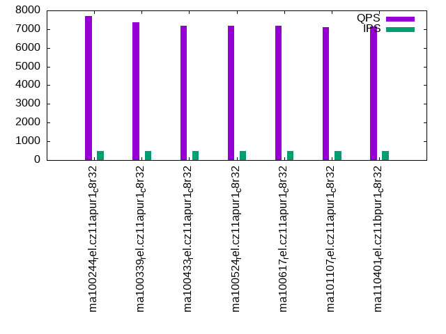

This is a report for the insert benchmark with 50M docs and 1 client(s). It is generated by scripts (bash, awk, sed) and Tufte might not be impressed. An overview of the insert benchmark is here and a short update is here. Below, by DBMS, I mean DBMS+version.config. An example is my8020.c10b40 where my means MySQL, 8020 is version 8.0.20 and c10b40 is the name for the configuration file.
The test server has 8 AMD cores, 32G RAM and an NVMe SSD. It is described here as the ASUS PN53. The benchmark was run with 1 client and there were 1 or 3 connections per client (1 for queries or inserts without rate limits, 1+1 for rate limited inserts+deletes). It uses 1 table. It loads 50M rows per table without secondary indexes, creates 3 secondary indexes per table, then inserts 40m+10m rows per table with a delete per insert to avoid growing the table. It then does 6 read+write tests for 1800s each that do queries as fast as possible with 100,100,500,500,1000,1000 inserts/s and the same for deletes/s per client concurrent with the queries. The database is cached in memory. Clients and the DBMS share one server. The per-database configs are in the per-database subdirectories here.
The tested DBMS are:
The numbers are inserts/s for l.i0, l.i1 and l.i2, indexed docs (or rows) /s for l.x and queries/s for qr100, qp100 thru qr1000, qp1000" The values are the average rate over the entire test for inserts (IPS) and queries (QPS). The range of values for IPS and QPS is split into 3 parts: bottom 25%, middle 50%, top 25%. Values in the bottom 25% have a red background, values in the top 25% have a green background and values in the middle have no color. A gray background is used for values that can be ignored because the DBMS did not sustain the target insert rate. Red backgrounds are not used when the minimum value is within 80% of the max value.
| dbms | l.i0 | l.x | l.i1 | l.i2 | qr100 | qp100 | qr500 | qp500 | qr1000 | qp1000 |
|---|---|---|---|---|---|---|---|---|---|---|
| ma100244_rel.cz11apur1_c8r32 | 179856 | 246306 | 33389 | 20618 | 9051 | 7792 | 8943 | 7707 | 8938 | 7611 |
| ma100339_rel.cz11apur1_c8r32 | 158228 | 238096 | 34100 | 20704 | 8760 | 7496 | 8716 | 7349 | 8618 | 7377 |
| ma100433_rel.cz11apur1_c8r32 | 159744 | 238096 | 34014 | 20161 | 8412 | 7209 | 8420 | 7196 | 8416 | 7056 |
| ma100524_rel.cz11apur1_c8r32 | 159744 | 204082 | 40040 | 23981 | 8332 | 7230 | 8175 | 7197 | 8206 | 7168 |
| ma100617_rel.cz11apur1_c8r32 | 160772 | 204918 | 35587 | 24510 | 8276 | 7218 | 8246 | 7177 | 8330 | 7205 |
| ma101107_rel.cz11apur1_c8r32 | 158228 | 201613 | 34335 | 22573 | 8238 | 7129 | 8296 | 7095 | 8190 | 7094 |
| ma110401_rel.cz11bpur1_c8r32 | 161812 | 200000 | 31620 | 21882 | 8315 | 7135 | 8356 | 7149 | 8316 | 7113 |
This table has relative throughput, throughput for the DBMS relative to the DBMS in the first line, using the absolute throughput from the previous table. Values less than 0.95 have a yellow background. Values greater than 1.05 have a blue background.
| dbms | l.i0 | l.x | l.i1 | l.i2 | qr100 | qp100 | qr500 | qp500 | qr1000 | qp1000 |
|---|---|---|---|---|---|---|---|---|---|---|
| ma100244_rel.cz11apur1_c8r32 | 1.00 | 1.00 | 1.00 | 1.00 | 1.00 | 1.00 | 1.00 | 1.00 | 1.00 | 1.00 |
| ma100339_rel.cz11apur1_c8r32 | 0.88 | 0.97 | 1.02 | 1.00 | 0.97 | 0.96 | 0.97 | 0.95 | 0.96 | 0.97 |
| ma100433_rel.cz11apur1_c8r32 | 0.89 | 0.97 | 1.02 | 0.98 | 0.93 | 0.93 | 0.94 | 0.93 | 0.94 | 0.93 |
| ma100524_rel.cz11apur1_c8r32 | 0.89 | 0.83 | 1.20 | 1.16 | 0.92 | 0.93 | 0.91 | 0.93 | 0.92 | 0.94 |
| ma100617_rel.cz11apur1_c8r32 | 0.89 | 0.83 | 1.07 | 1.19 | 0.91 | 0.93 | 0.92 | 0.93 | 0.93 | 0.95 |
| ma101107_rel.cz11apur1_c8r32 | 0.88 | 0.82 | 1.03 | 1.09 | 0.91 | 0.91 | 0.93 | 0.92 | 0.92 | 0.93 |
| ma110401_rel.cz11bpur1_c8r32 | 0.90 | 0.81 | 0.95 | 1.06 | 0.92 | 0.92 | 0.93 | 0.93 | 0.93 | 0.93 |
This lists the average rate of inserts/s for the tests that do inserts concurrent with queries. For such tests the query rate is listed in the table above. The read+write tests are setup so that the insert rate should match the target rate every second. Cells that are not at least 95% of the target have a red background to indicate a failure to satisfy the target.
| dbms | qr100.L1 | qp100.L2 | qr500.L3 | qp500.L4 | qr1000.L5 | qp1000.L6 |
|---|---|---|---|---|---|---|
| ma100244_rel.cz11apur1_c8r32 | 100 | 100 | 499 | 499 | 999 | 999 |
| ma100339_rel.cz11apur1_c8r32 | 100 | 100 | 499 | 499 | 999 | 999 |
| ma100433_rel.cz11apur1_c8r32 | 100 | 100 | 499 | 499 | 999 | 999 |
| ma100524_rel.cz11apur1_c8r32 | 100 | 100 | 499 | 499 | 999 | 999 |
| ma100617_rel.cz11apur1_c8r32 | 100 | 100 | 499 | 499 | 999 | 999 |
| ma101107_rel.cz11apur1_c8r32 | 100 | 100 | 499 | 499 | 999 | 999 |
| ma110401_rel.cz11bpur1_c8r32 | 100 | 100 | 499 | 499 | 999 | 999 |
| target | 100 | 100 | 500 | 500 | 1000 | 1000 |
l.i0: load without secondary indexes. Graphs for performance per 1-second interval are here.
Average throughput:
Insert response time histogram: each cell has the percentage of responses that take <= the time in the header and max is the max response time in seconds. For the max column values in the top 25% of the range have a red background and in the bottom 25% of the range have a green background. The red background is not used when the min value is within 80% of the max value.
| dbms | 256us | 1ms | 4ms | 16ms | 64ms | 256ms | 1s | 4s | 16s | gt | max |
|---|---|---|---|---|---|---|---|---|---|---|---|
| ma100244_rel.cz11apur1_c8r32 | 99.599 | 0.155 | 0.232 | 0.010 | 0.004 | 0.132 | |||||
| ma100339_rel.cz11apur1_c8r32 | 99.381 | 0.253 | 0.343 | 0.019 | 0.004 | 0.135 | |||||
| ma100433_rel.cz11apur1_c8r32 | 99.537 | 0.192 | 0.255 | 0.012 | 0.004 | 0.126 | |||||
| ma100524_rel.cz11apur1_c8r32 | 99.334 | 0.224 | 0.379 | 0.058 | 0.004 | 0.124 | |||||
| ma100617_rel.cz11apur1_c8r32 | 99.582 | 0.169 | 0.240 | 0.005 | 0.004 | 0.174 | |||||
| ma101107_rel.cz11apur1_c8r32 | 99.585 | 0.167 | 0.235 | 0.008 | 0.005 | 0.164 | |||||
| ma110401_rel.cz11bpur1_c8r32 | 99.590 | 0.164 | 0.223 | 0.018 | 0.005 | 0.197 |
Performance metrics for the DBMS listed above. Some are normalized by throughput, others are not. Legend for results is here.
ips qps rps rmbps wps wmbps rpq rkbpq wpi wkbpi csps cpups cspq cpupq dbgb1 dbgb2 rss maxop p50 p99 tag 179856 0 0 0.0 919.9 57.7 0.000 0.000 0.005 0.328 19421 21.8 0.108 10 3.3 34.1 4.3 0.132 182200 155329 ma100244_rel.cz11apur1_c8r32 158228 0 0 0.0 1203.5 64.4 0.000 0.000 0.008 0.417 21149 23.2 0.134 12 3.3 34.1 4.2 0.135 159924 134854 ma100339_rel.cz11apur1_c8r32 159744 0 0 0.0 858.2 55.0 0.000 0.000 0.005 0.353 20832 23.8 0.130 12 3.3 34.1 NA 0.126 161875 138448 ma100433_rel.cz11apur1_c8r32 159744 0 0 0.0 1308.3 52.4 0.000 0.000 0.008 0.336 23894 23.2 0.150 12 3.3 34.1 4.0 0.124 161376 139251 ma100524_rel.cz11apur1_c8r32 160772 0 0 0.0 618.3 39.3 0.000 0.000 0.004 0.250 19662 23.7 0.122 12 3.3 34.1 3.7 0.174 161723 139546 ma100617_rel.cz11apur1_c8r32 158228 0 0 0.0 643.2 40.4 0.000 0.000 0.004 0.261 19214 23.3 0.121 12 3.3 34.1 3.7 0.164 160124 138850 ma101107_rel.cz11apur1_c8r32 161812 0 0 0.0 656.8 40.6 0.000 0.000 0.004 0.257 20447 23.8 0.126 12 3.3 34.1 3.8 0.197 162921 139548 ma110401_rel.cz11bpur1_c8r32
l.x: create secondary indexes.
Average throughput:
Performance metrics for the DBMS listed above. Some are normalized by throughput, others are not. Legend for results is here.
ips qps rps rmbps wps wmbps rpq rkbpq wpi wkbpi csps cpups cspq cpupq dbgb1 dbgb2 rss maxop p50 p99 tag 246306 0 0 0.0 2813.3 232.0 0.000 0.000 0.011 0.965 11456 12.6 0.047 4 7.6 38.4 6.9 0.001 NA NA ma100244_rel.cz11apur1_c8r32 238096 0 0 0.0 2398.7 214.1 0.000 0.000 0.010 0.921 10738 12.2 0.045 4 7.6 38.4 8.1 0.001 NA NA ma100339_rel.cz11apur1_c8r32 238096 0 0 0.0 2663.7 223.2 0.000 0.000 0.011 0.960 10648 12.5 0.045 4 7.5 38.3 NA 0.001 NA NA ma100433_rel.cz11apur1_c8r32 204082 0 0 0.0 1335.1 165.6 0.000 0.000 0.007 0.831 439 11.9 0.002 5 7.5 38.3 7.5 0.002 NA NA ma100524_rel.cz11apur1_c8r32 204918 0 0 0.0 2412.8 182.5 0.000 0.000 0.012 0.912 5418 12.2 0.026 5 7.5 38.3 7.2 0.001 NA NA ma100617_rel.cz11apur1_c8r32 201613 0 0 0.0 2335.6 178.4 0.000 0.000 0.012 0.906 5195 12.1 0.026 5 7.5 38.3 6.9 0.002 NA NA ma101107_rel.cz11apur1_c8r32 200000 0 0 0.0 2299.1 176.1 0.000 0.000 0.011 0.901 5108 12.0 0.026 5 7.5 38.3 6.7 0.001 NA NA ma110401_rel.cz11bpur1_c8r32
l.i1: continue load after secondary indexes created with 50 inserts per transaction. Graphs for performance per 1-second interval are here.
Average throughput:
Insert response time histogram: each cell has the percentage of responses that take <= the time in the header and max is the max response time in seconds. For the max column values in the top 25% of the range have a red background and in the bottom 25% of the range have a green background. The red background is not used when the min value is within 80% of the max value.
| dbms | 256us | 1ms | 4ms | 16ms | 64ms | 256ms | 1s | 4s | 16s | gt | max |
|---|---|---|---|---|---|---|---|---|---|---|---|
| ma100244_rel.cz11apur1_c8r32 | 4.255 | 90.510 | 5.213 | 0.021 | nonzero | 0.065 | |||||
| ma100339_rel.cz11apur1_c8r32 | 4.779 | 90.446 | 4.753 | 0.022 | 0.001 | 0.071 | |||||
| ma100433_rel.cz11apur1_c8r32 | 2.102 | 93.400 | 4.478 | 0.019 | nonzero | 0.154 | |||||
| ma100524_rel.cz11apur1_c8r32 | 14.986 | 83.860 | 1.094 | 0.052 | 0.002 | 0.006 | 0.394 | ||||
| ma100617_rel.cz11apur1_c8r32 | 6.969 | 91.890 | 1.096 | 0.044 | 0.001 | nonzero | 0.282 | ||||
| ma101107_rel.cz11apur1_c8r32 | 2.921 | 95.920 | 1.122 | 0.036 | 0.001 | 0.236 | |||||
| ma110401_rel.cz11bpur1_c8r32 | 5.355 | 92.048 | 2.305 | 0.289 | 0.003 | 0.229 |
Delete response time histogram: each cell has the percentage of responses that take <= the time in the header and max is the max response time in seconds. For the max column values in the top 25% of the range have a red background and in the bottom 25% of the range have a green background. The red background is not used when the min value is within 80% of the max value.
| dbms | 256us | 1ms | 4ms | 16ms | 64ms | 256ms | 1s | 4s | 16s | gt | max |
|---|---|---|---|---|---|---|---|---|---|---|---|
| ma100244_rel.cz11apur1_c8r32 | 87.584 | 7.729 | 4.676 | 0.010 | 0.064 | ||||||
| ma100339_rel.cz11apur1_c8r32 | 90.697 | 5.143 | 4.149 | 0.011 | 0.058 | ||||||
| ma100433_rel.cz11apur1_c8r32 | 90.570 | 5.508 | 3.913 | 0.008 | nonzero | 0.068 | |||||
| ma100524_rel.cz11apur1_c8r32 | 96.998 | 2.264 | 0.711 | 0.018 | 0.003 | 0.006 | 0.261 | ||||
| ma100617_rel.cz11apur1_c8r32 | 59.517 | 39.655 | 0.795 | 0.033 | 0.001 | 0.106 | |||||
| ma101107_rel.cz11apur1_c8r32 | 49.686 | 49.472 | 0.814 | 0.026 | 0.001 | 0.234 | |||||
| ma110401_rel.cz11bpur1_c8r32 | 54.844 | 42.913 | 1.995 | 0.245 | 0.003 | 0.228 |
Performance metrics for the DBMS listed above. Some are normalized by throughput, others are not. Legend for results is here.
ips qps rps rmbps wps wmbps rpq rkbpq wpi wkbpi csps cpups cspq cpupq dbgb1 dbgb2 rss maxop p50 p99 tag 33389 0 0 0.0 11928.2 376.1 0.000 0.000 0.357 11.534 51548 33.8 1.544 81 10.1 41.0 11.1 0.065 33714 12386 ma100244_rel.cz11apur1_c8r32 34100 0 0 0.0 10707.3 344.1 0.000 0.000 0.314 10.332 47604 33.8 1.396 79 10.2 41.0 11.2 0.071 34812 10988 ma100339_rel.cz11apur1_c8r32 34014 0 0 0.0 10205.6 329.8 0.000 0.000 0.300 9.928 46738 33.4 1.374 79 10.2 41.0 NA 0.154 34912 10988 ma100433_rel.cz11apur1_c8r32 40040 0 0 0.0 8838.0 279.5 0.000 0.000 0.221 7.149 56644 35.8 1.415 72 11.0 43.0 11.4 0.394 43054 200 ma100524_rel.cz11apur1_c8r32 35587 0 0 0.0 5491.8 185.7 0.000 0.000 0.154 5.342 92213 30.9 2.591 69 10.1 40.9 10.0 0.282 38222 11387 ma100617_rel.cz11apur1_c8r32 34335 0 878 3.4 5352.3 180.8 0.026 0.102 0.156 5.393 88977 29.9 2.591 70 10.1 40.9 10.0 0.236 36722 11038 ma101107_rel.cz11apur1_c8r32 31620 0 833 3.3 4978.8 166.5 0.026 0.105 0.157 5.392 80700 27.3 2.552 69 10.1 40.9 10.0 0.229 32065 12686 ma110401_rel.cz11bpur1_c8r32
l.i2: continue load after secondary indexes created with 5 inserts per transaction. Graphs for performance per 1-second interval are here.
Average throughput:
Insert response time histogram: each cell has the percentage of responses that take <= the time in the header and max is the max response time in seconds. For the max column values in the top 25% of the range have a red background and in the bottom 25% of the range have a green background. The red background is not used when the min value is within 80% of the max value.
| dbms | 256us | 1ms | 4ms | 16ms | 64ms | 256ms | 1s | 4s | 16s | gt | max |
|---|---|---|---|---|---|---|---|---|---|---|---|
| ma100244_rel.cz11apur1_c8r32 | 94.843 | 4.336 | 0.115 | 0.706 | 0.001 | nonzero | 0.069 | ||||
| ma100339_rel.cz11apur1_c8r32 | 94.515 | 4.743 | 0.096 | 0.645 | 0.001 | 0.064 | |||||
| ma100433_rel.cz11apur1_c8r32 | 93.971 | 5.245 | 0.100 | 0.683 | 0.001 | nonzero | 0.065 | ||||
| ma100524_rel.cz11apur1_c8r32 | 96.585 | 3.250 | 0.135 | 0.028 | 0.002 | 0.053 | |||||
| ma100617_rel.cz11apur1_c8r32 | 95.847 | 4.089 | 0.050 | 0.013 | 0.001 | 0.053 | |||||
| ma101107_rel.cz11apur1_c8r32 | 88.990 | 10.935 | 0.064 | 0.011 | nonzero | 0.059 | |||||
| ma110401_rel.cz11bpur1_c8r32 | 90.945 | 8.879 | 0.057 | 0.116 | 0.003 | 0.061 |
Delete response time histogram: each cell has the percentage of responses that take <= the time in the header and max is the max response time in seconds. For the max column values in the top 25% of the range have a red background and in the bottom 25% of the range have a green background. The red background is not used when the min value is within 80% of the max value.
| dbms | 256us | 1ms | 4ms | 16ms | 64ms | 256ms | 1s | 4s | 16s | gt | max |
|---|---|---|---|---|---|---|---|---|---|---|---|
| ma100244_rel.cz11apur1_c8r32 | 96.509 | 2.683 | 0.108 | 0.700 | 0.001 | nonzero | 0.069 | ||||
| ma100339_rel.cz11apur1_c8r32 | 96.526 | 2.740 | 0.093 | 0.640 | 0.001 | 0.064 | |||||
| ma100433_rel.cz11apur1_c8r32 | 96.351 | 2.875 | 0.096 | 0.676 | 0.001 | nonzero | 0.065 | ||||
| ma100524_rel.cz11apur1_c8r32 | 98.915 | 0.952 | 0.110 | 0.022 | 0.002 | 0.053 | |||||
| ma100617_rel.cz11apur1_c8r32 | 98.224 | 1.722 | 0.042 | 0.012 | 0.001 | 0.053 | |||||
| ma101107_rel.cz11apur1_c8r32 | 95.656 | 4.276 | 0.058 | 0.010 | nonzero | 0.059 | |||||
| ma110401_rel.cz11bpur1_c8r32 | 94.776 | 5.068 | 0.051 | 0.103 | 0.003 | 0.061 |
Performance metrics for the DBMS listed above. Some are normalized by throughput, others are not. Legend for results is here.
ips qps rps rmbps wps wmbps rpq rkbpq wpi wkbpi csps cpups cspq cpupq dbgb1 dbgb2 rss maxop p50 p99 tag 20618 0 0 0.0 13080.7 384.5 0.000 0.000 0.634 19.095 131207 34.5 6.364 134 10.4 41.2 11.4 0.069 20474 17127 ma100244_rel.cz11apur1_c8r32 20704 0 0 0.0 12494.7 369.1 0.000 0.000 0.603 18.256 129252 34.9 6.243 135 10.5 41.3 11.5 0.064 20688 17356 ma100339_rel.cz11apur1_c8r32 20161 0 0 0.0 13104.4 384.6 0.000 0.000 0.650 19.536 130640 34.2 6.480 136 10.4 41.2 NA 0.065 19990 16792 ma100433_rel.cz11apur1_c8r32 23981 0 0 0.0 10912.1 318.7 0.000 0.000 0.455 13.607 155327 38.0 6.477 127 11.2 43.3 11.4 0.053 24077 22751 ma100524_rel.cz11apur1_c8r32 24510 0 0 0.0 2765.7 95.9 0.000 0.000 0.113 4.006 118905 34.6 4.851 113 10.3 41.2 10.2 0.053 24574 23285 ma100617_rel.cz11apur1_c8r32 22573 0 3214 12.6 2628.4 91.2 0.142 0.569 0.116 4.137 114634 33.0 5.078 117 10.3 41.2 10.2 0.059 22546 21367 ma101107_rel.cz11apur1_c8r32 21882 0 3106 12.1 2556.0 87.9 0.142 0.568 0.117 4.113 111089 31.9 5.077 117 10.3 41.1 10.2 0.061 22631 18795 ma110401_rel.cz11bpur1_c8r32
qr100.L1: range queries with 100 insert/s per client. Graphs for performance per 1-second interval are here.
Average throughput:
Query response time histogram: each cell has the percentage of responses that take <= the time in the header and max is the max response time in seconds. For max values in the top 25% of the range have a red background and in the bottom 25% of the range have a green background. The red background is not used when the min value is within 80% of the max value.
| dbms | 256us | 1ms | 4ms | 16ms | 64ms | 256ms | 1s | 4s | 16s | gt | max |
|---|---|---|---|---|---|---|---|---|---|---|---|
| ma100244_rel.cz11apur1_c8r32 | 99.994 | 0.005 | nonzero | nonzero | 0.014 | ||||||
| ma100339_rel.cz11apur1_c8r32 | 99.992 | 0.007 | nonzero | nonzero | 0.015 | ||||||
| ma100433_rel.cz11apur1_c8r32 | 99.990 | 0.010 | nonzero | nonzero | nonzero | 0.022 | |||||
| ma100524_rel.cz11apur1_c8r32 | 99.996 | 0.004 | nonzero | 0.001 | |||||||
| ma100617_rel.cz11apur1_c8r32 | 99.996 | 0.004 | 0.001 | ||||||||
| ma101107_rel.cz11apur1_c8r32 | 99.995 | 0.005 | 0.001 | ||||||||
| ma110401_rel.cz11bpur1_c8r32 | 99.995 | 0.005 | 0.001 |
Insert response time histogram: each cell has the percentage of responses that take <= the time in the header and max is the max response time in seconds. For max values in the top 25% of the range have a red background and in the bottom 25% of the range have a green background. The red background is not used when the min value is within 80% of the max value.
| dbms | 256us | 1ms | 4ms | 16ms | 64ms | 256ms | 1s | 4s | 16s | gt | max |
|---|---|---|---|---|---|---|---|---|---|---|---|
| ma100244_rel.cz11apur1_c8r32 | 0.889 | 96.028 | 2.500 | 0.583 | 0.030 | ||||||
| ma100339_rel.cz11apur1_c8r32 | 0.528 | 96.556 | 2.278 | 0.639 | 0.036 | ||||||
| ma100433_rel.cz11apur1_c8r32 | 0.583 | 96.333 | 2.528 | 0.556 | 0.037 | ||||||
| ma100524_rel.cz11apur1_c8r32 | 5.056 | 94.944 | 0.002 | ||||||||
| ma100617_rel.cz11apur1_c8r32 | 19.667 | 80.333 | 0.002 | ||||||||
| ma101107_rel.cz11apur1_c8r32 | 0.611 | 52.750 | 46.639 | 0.011 | |||||||
| ma110401_rel.cz11bpur1_c8r32 | 1.139 | 52.306 | 46.556 | 0.011 |
Delete response time histogram: each cell has the percentage of responses that take <= the time in the header and max is the max response time in seconds. For max values in the top 25% of the range have a red background and in the bottom 25% of the range have a green background. The red background is not used when the min value is within 80% of the max value.
| dbms | 256us | 1ms | 4ms | 16ms | 64ms | 256ms | 1s | 4s | 16s | gt | max |
|---|---|---|---|---|---|---|---|---|---|---|---|
| ma100244_rel.cz11apur1_c8r32 | 39.250 | 57.972 | 2.528 | 0.250 | 0.021 | ||||||
| ma100339_rel.cz11apur1_c8r32 | 52.167 | 45.278 | 2.361 | 0.194 | 0.022 | ||||||
| ma100433_rel.cz11apur1_c8r32 | 51.389 | 46.083 | 2.222 | 0.306 | 0.033 | ||||||
| ma100524_rel.cz11apur1_c8r32 | 63.583 | 36.417 | 0.002 | ||||||||
| ma100617_rel.cz11apur1_c8r32 | 52.722 | 47.278 | 0.002 | ||||||||
| ma101107_rel.cz11apur1_c8r32 | 3.417 | 49.944 | 46.639 | 0.011 | |||||||
| ma110401_rel.cz11bpur1_c8r32 | 3.889 | 49.556 | 46.556 | 0.011 |
Performance metrics for the DBMS listed above. Some are normalized by throughput, others are not. Legend for results is here.
ips qps rps rmbps wps wmbps rpq rkbpq wpi wkbpi csps cpups cspq cpupq dbgb1 dbgb2 rss maxop p50 p99 tag 100 9051 0 0.0 876.0 24.3 0.000 0.000 8.778 248.995 37402 12.9 4.133 114 10.4 41.2 11.4 0.014 9046 8966 ma100244_rel.cz11apur1_c8r32 100 8760 0 0.0 866.8 24.0 0.000 0.000 8.686 246.337 36297 12.7 4.143 116 10.5 41.3 11.5 0.015 8762 8647 ma100339_rel.cz11apur1_c8r32 100 8412 0 0.0 865.5 24.0 0.000 0.000 8.672 245.928 35020 12.7 4.163 121 10.4 41.2 NA 0.022 8409 8343 ma100433_rel.cz11apur1_c8r32 100 8332 0 0.0 2.4 0.1 0.000 0.000 0.024 1.172 32186 12.6 3.863 121 11.2 43.3 11.4 0.001 8343 8215 ma100524_rel.cz11apur1_c8r32 100 8276 0 0.0 2.4 0.1 0.000 0.000 0.024 1.186 31769 12.6 3.838 122 10.3 41.2 10.2 0.001 8279 8231 ma100617_rel.cz11apur1_c8r32 100 8238 4 0.0 2.4 0.1 0.000 0.002 0.024 1.192 31658 12.6 3.843 122 10.3 41.2 10.2 0.001 8247 8183 ma101107_rel.cz11apur1_c8r32 100 8315 3 0.0 2.3 0.1 0.000 0.002 0.024 1.181 31944 12.6 3.842 121 10.3 41.1 10.2 0.001 8313 8231 ma110401_rel.cz11bpur1_c8r32
qp100.L2: point queries with 100 insert/s per client. Graphs for performance per 1-second interval are here.
Average throughput:
Query response time histogram: each cell has the percentage of responses that take <= the time in the header and max is the max response time in seconds. For max values in the top 25% of the range have a red background and in the bottom 25% of the range have a green background. The red background is not used when the min value is within 80% of the max value.
| dbms | 256us | 1ms | 4ms | 16ms | 64ms | 256ms | 1s | 4s | 16s | gt | max |
|---|---|---|---|---|---|---|---|---|---|---|---|
| ma100244_rel.cz11apur1_c8r32 | 99.988 | 0.012 | nonzero | nonzero | 0.008 | ||||||
| ma100339_rel.cz11apur1_c8r32 | 99.983 | 0.017 | nonzero | nonzero | 0.015 | ||||||
| ma100433_rel.cz11apur1_c8r32 | 99.976 | 0.024 | nonzero | nonzero | nonzero | 0.023 | |||||
| ma100524_rel.cz11apur1_c8r32 | 99.989 | 0.011 | nonzero | 0.001 | |||||||
| ma100617_rel.cz11apur1_c8r32 | 99.989 | 0.011 | nonzero | 0.002 | |||||||
| ma101107_rel.cz11apur1_c8r32 | 99.985 | 0.015 | 0.001 | ||||||||
| ma110401_rel.cz11bpur1_c8r32 | 99.988 | 0.012 | 0.001 |
Insert response time histogram: each cell has the percentage of responses that take <= the time in the header and max is the max response time in seconds. For max values in the top 25% of the range have a red background and in the bottom 25% of the range have a green background. The red background is not used when the min value is within 80% of the max value.
| dbms | 256us | 1ms | 4ms | 16ms | 64ms | 256ms | 1s | 4s | 16s | gt | max |
|---|---|---|---|---|---|---|---|---|---|---|---|
| ma100244_rel.cz11apur1_c8r32 | 96.694 | 2.694 | 0.611 | 0.032 | |||||||
| ma100339_rel.cz11apur1_c8r32 | 96.611 | 2.833 | 0.556 | 0.047 | |||||||
| ma100433_rel.cz11apur1_c8r32 | 96.667 | 2.722 | 0.611 | 0.035 | |||||||
| ma100524_rel.cz11apur1_c8r32 | 0.028 | 99.972 | 0.002 | ||||||||
| ma100617_rel.cz11apur1_c8r32 | 0.917 | 99.083 | 0.002 | ||||||||
| ma101107_rel.cz11apur1_c8r32 | 0.028 | 53.333 | 46.639 | 0.011 | |||||||
| ma110401_rel.cz11bpur1_c8r32 | 0.167 | 53.278 | 46.556 | 0.015 |
Delete response time histogram: each cell has the percentage of responses that take <= the time in the header and max is the max response time in seconds. For max values in the top 25% of the range have a red background and in the bottom 25% of the range have a green background. The red background is not used when the min value is within 80% of the max value.
| dbms | 256us | 1ms | 4ms | 16ms | 64ms | 256ms | 1s | 4s | 16s | gt | max |
|---|---|---|---|---|---|---|---|---|---|---|---|
| ma100244_rel.cz11apur1_c8r32 | 6.389 | 90.556 | 2.833 | 0.222 | 0.025 | ||||||
| ma100339_rel.cz11apur1_c8r32 | 27.472 | 69.639 | 2.667 | 0.222 | 0.030 | ||||||
| ma100433_rel.cz11apur1_c8r32 | 23.639 | 73.639 | 2.389 | 0.333 | 0.025 | ||||||
| ma100524_rel.cz11apur1_c8r32 | 33.111 | 66.889 | 0.002 | ||||||||
| ma100617_rel.cz11apur1_c8r32 | 46.639 | 53.361 | 0.002 | ||||||||
| ma101107_rel.cz11apur1_c8r32 | 2.444 | 50.917 | 46.639 | 0.011 | |||||||
| ma110401_rel.cz11bpur1_c8r32 | 2.806 | 50.667 | 46.528 | 0.011 |
Performance metrics for the DBMS listed above. Some are normalized by throughput, others are not. Legend for results is here.
ips qps rps rmbps wps wmbps rpq rkbpq wpi wkbpi csps cpups cspq cpupq dbgb1 dbgb2 rss maxop p50 p99 tag 100 7792 0 0.0 856.6 23.7 0.000 0.000 8.583 243.435 33974 12.8 4.360 131 10.4 41.2 11.4 0.008 7799 7576 ma100244_rel.cz11apur1_c8r32 100 7496 0 0.0 854.3 23.7 0.000 0.000 8.560 242.752 32749 12.9 4.369 138 10.5 41.3 11.5 0.015 7496 7320 ma100339_rel.cz11apur1_c8r32 100 7209 0 0.0 854.2 23.7 0.000 0.000 8.559 242.720 31707 13.2 4.398 146 10.4 41.2 NA 0.023 7208 7017 ma100433_rel.cz11apur1_c8r32 100 7230 0 0.0 2.4 0.1 0.000 0.000 0.024 1.154 29314 13.0 4.054 144 11.2 43.3 11.4 0.001 7240 7019 ma100524_rel.cz11apur1_c8r32 100 7218 0 0.0 16.5 0.5 0.000 0.000 0.165 5.165 29160 12.9 4.040 143 10.3 41.2 10.2 0.002 7224 7032 ma100617_rel.cz11apur1_c8r32 100 7129 3 0.0 8.6 0.3 0.000 0.002 0.086 2.944 28770 13.1 4.035 147 10.3 41.2 10.2 0.001 7128 7019 ma101107_rel.cz11apur1_c8r32 100 7135 3 0.0 15.1 0.5 0.000 0.002 0.151 4.722 28821 13.1 4.040 147 10.3 41.1 10.2 0.001 7144 6952 ma110401_rel.cz11bpur1_c8r32
qr500.L3: range queries with 500 insert/s per client. Graphs for performance per 1-second interval are here.
Average throughput:
Query response time histogram: each cell has the percentage of responses that take <= the time in the header and max is the max response time in seconds. For max values in the top 25% of the range have a red background and in the bottom 25% of the range have a green background. The red background is not used when the min value is within 80% of the max value.
| dbms | 256us | 1ms | 4ms | 16ms | 64ms | 256ms | 1s | 4s | 16s | gt | max |
|---|---|---|---|---|---|---|---|---|---|---|---|
| ma100244_rel.cz11apur1_c8r32 | 99.985 | 0.013 | nonzero | 0.001 | nonzero | 0.022 | |||||
| ma100339_rel.cz11apur1_c8r32 | 99.979 | 0.019 | nonzero | 0.002 | nonzero | 0.025 | |||||
| ma100433_rel.cz11apur1_c8r32 | 99.976 | 0.022 | nonzero | 0.001 | nonzero | 0.017 | |||||
| ma100524_rel.cz11apur1_c8r32 | 99.989 | 0.011 | nonzero | 0.002 | |||||||
| ma100617_rel.cz11apur1_c8r32 | 99.991 | 0.009 | nonzero | 0.002 | |||||||
| ma101107_rel.cz11apur1_c8r32 | 99.989 | 0.011 | nonzero | nonzero | 0.005 | ||||||
| ma110401_rel.cz11bpur1_c8r32 | 99.989 | 0.011 | nonzero | nonzero | 0.009 |
Insert response time histogram: each cell has the percentage of responses that take <= the time in the header and max is the max response time in seconds. For max values in the top 25% of the range have a red background and in the bottom 25% of the range have a green background. The red background is not used when the min value is within 80% of the max value.
| dbms | 256us | 1ms | 4ms | 16ms | 64ms | 256ms | 1s | 4s | 16s | gt | max |
|---|---|---|---|---|---|---|---|---|---|---|---|
| ma100244_rel.cz11apur1_c8r32 | 11.800 | 80.778 | 6.822 | 0.600 | 0.038 | ||||||
| ma100339_rel.cz11apur1_c8r32 | 7.456 | 84.572 | 7.194 | 0.778 | 0.038 | ||||||
| ma100433_rel.cz11apur1_c8r32 | 8.800 | 83.833 | 6.761 | 0.606 | 0.043 | ||||||
| ma100524_rel.cz11apur1_c8r32 | 15.561 | 84.439 | 0.002 | ||||||||
| ma100617_rel.cz11apur1_c8r32 | 51.744 | 48.256 | 0.002 | ||||||||
| ma101107_rel.cz11apur1_c8r32 | 17.539 | 73.150 | 9.311 | 0.011 | |||||||
| ma110401_rel.cz11bpur1_c8r32 | 23.611 | 67.039 | 9.350 | 0.011 |
Delete response time histogram: each cell has the percentage of responses that take <= the time in the header and max is the max response time in seconds. For max values in the top 25% of the range have a red background and in the bottom 25% of the range have a green background. The red background is not used when the min value is within 80% of the max value.
| dbms | 256us | 1ms | 4ms | 16ms | 64ms | 256ms | 1s | 4s | 16s | gt | max |
|---|---|---|---|---|---|---|---|---|---|---|---|
| ma100244_rel.cz11apur1_c8r32 | 70.817 | 22.339 | 6.467 | 0.378 | 0.030 | ||||||
| ma100339_rel.cz11apur1_c8r32 | 79.917 | 12.778 | 6.761 | 0.544 | 0.029 | ||||||
| ma100433_rel.cz11apur1_c8r32 | 80.278 | 12.856 | 6.500 | 0.367 | 0.044 | ||||||
| ma100524_rel.cz11apur1_c8r32 | 89.417 | 10.583 | 0.002 | ||||||||
| ma100617_rel.cz11apur1_c8r32 | 88.672 | 11.328 | 0.002 | ||||||||
| ma101107_rel.cz11apur1_c8r32 | 79.056 | 11.633 | 9.311 | 0.011 | |||||||
| ma110401_rel.cz11bpur1_c8r32 | 78.917 | 11.744 | 9.339 | 0.011 |
Performance metrics for the DBMS listed above. Some are normalized by throughput, others are not. Legend for results is here.
ips qps rps rmbps wps wmbps rpq rkbpq wpi wkbpi csps cpups cspq cpupq dbgb1 dbgb2 rss maxop p50 p99 tag 499 8943 0 0.0 3633.7 101.2 0.000 0.000 7.276 207.508 45283 14.3 5.064 128 10.4 41.2 11.4 0.022 8950 8694 ma100244_rel.cz11apur1_c8r32 499 8716 0 0.0 3658.9 101.9 0.000 0.000 7.327 208.945 44360 14.3 5.090 131 10.5 41.3 11.5 0.025 8726 8391 ma100339_rel.cz11apur1_c8r32 499 8420 0 0.0 3657.9 101.9 0.000 0.000 7.325 208.893 43846 14.3 5.207 136 10.4 41.2 NA 0.017 8439 8170 ma100433_rel.cz11apur1_c8r32 499 8175 0 0.0 5.9 0.5 0.000 0.000 0.012 1.108 31671 13.3 3.874 130 11.2 43.3 11.4 0.002 8170 8119 ma100524_rel.cz11apur1_c8r32 499 8246 0 0.0 6.0 0.5 0.000 0.000 0.012 1.122 31850 13.2 3.862 128 10.3 41.2 10.2 0.002 8247 8199 ma100617_rel.cz11apur1_c8r32 499 8296 19 0.1 24.8 1.1 0.002 0.009 0.050 2.203 32167 13.2 3.878 127 10.3 41.2 10.2 0.005 8295 8231 ma101107_rel.cz11apur1_c8r32 499 8356 19 0.1 25.0 1.1 0.002 0.009 0.050 2.191 32396 13.1 3.877 125 10.3 41.1 10.2 0.009 8359 8279 ma110401_rel.cz11bpur1_c8r32
qp500.L4: point queries with 500 insert/s per client. Graphs for performance per 1-second interval are here.
Average throughput:
Query response time histogram: each cell has the percentage of responses that take <= the time in the header and max is the max response time in seconds. For max values in the top 25% of the range have a red background and in the bottom 25% of the range have a green background. The red background is not used when the min value is within 80% of the max value.
| dbms | 256us | 1ms | 4ms | 16ms | 64ms | 256ms | 1s | 4s | 16s | gt | max |
|---|---|---|---|---|---|---|---|---|---|---|---|
| ma100244_rel.cz11apur1_c8r32 | 99.972 | 0.028 | nonzero | nonzero | 0.014 | ||||||
| ma100339_rel.cz11apur1_c8r32 | 99.959 | 0.041 | nonzero | nonzero | nonzero | 0.019 | |||||
| ma100433_rel.cz11apur1_c8r32 | 99.942 | 0.057 | nonzero | nonzero | nonzero | 0.023 | |||||
| ma100524_rel.cz11apur1_c8r32 | 99.972 | 0.028 | nonzero | 0.002 | |||||||
| ma100617_rel.cz11apur1_c8r32 | 99.981 | 0.018 | nonzero | 0.002 | |||||||
| ma101107_rel.cz11apur1_c8r32 | 99.970 | 0.030 | nonzero | 0.002 | |||||||
| ma110401_rel.cz11bpur1_c8r32 | 99.975 | 0.025 | nonzero | 0.002 |
Insert response time histogram: each cell has the percentage of responses that take <= the time in the header and max is the max response time in seconds. For max values in the top 25% of the range have a red background and in the bottom 25% of the range have a green background. The red background is not used when the min value is within 80% of the max value.
| dbms | 256us | 1ms | 4ms | 16ms | 64ms | 256ms | 1s | 4s | 16s | gt | max |
|---|---|---|---|---|---|---|---|---|---|---|---|
| ma100244_rel.cz11apur1_c8r32 | 8.444 | 83.911 | 6.928 | 0.717 | 0.034 | ||||||
| ma100339_rel.cz11apur1_c8r32 | 6.578 | 86.078 | 6.617 | 0.728 | 0.035 | ||||||
| ma100433_rel.cz11apur1_c8r32 | 4.889 | 87.617 | 6.756 | 0.739 | 0.041 | ||||||
| ma100524_rel.cz11apur1_c8r32 | 9.461 | 90.539 | 0.002 | ||||||||
| ma100617_rel.cz11apur1_c8r32 | 28.500 | 71.500 | 0.002 | ||||||||
| ma101107_rel.cz11apur1_c8r32 | 2.483 | 88.256 | 9.261 | 0.011 | |||||||
| ma110401_rel.cz11bpur1_c8r32 | 13.644 | 77.033 | 9.322 | 0.015 |
Delete response time histogram: each cell has the percentage of responses that take <= the time in the header and max is the max response time in seconds. For max values in the top 25% of the range have a red background and in the bottom 25% of the range have a green background. The red background is not used when the min value is within 80% of the max value.
| dbms | 256us | 1ms | 4ms | 16ms | 64ms | 256ms | 1s | 4s | 16s | gt | max |
|---|---|---|---|---|---|---|---|---|---|---|---|
| ma100244_rel.cz11apur1_c8r32 | 55.506 | 37.367 | 6.756 | 0.372 | 0.030 | ||||||
| ma100339_rel.cz11apur1_c8r32 | 74.222 | 18.833 | 6.600 | 0.344 | 0.038 | ||||||
| ma100433_rel.cz11apur1_c8r32 | 71.600 | 21.494 | 6.561 | 0.344 | 0.030 | ||||||
| ma100524_rel.cz11apur1_c8r32 | 83.194 | 16.806 | 0.002 | ||||||||
| ma100617_rel.cz11apur1_c8r32 | 87.611 | 12.389 | 0.002 | ||||||||
| ma101107_rel.cz11apur1_c8r32 | 70.511 | 20.228 | 9.261 | 0.011 | |||||||
| ma110401_rel.cz11bpur1_c8r32 | 76.539 | 14.139 | 9.322 | 0.011 |
Performance metrics for the DBMS listed above. Some are normalized by throughput, others are not. Legend for results is here.
ips qps rps rmbps wps wmbps rpq rkbpq wpi wkbpi csps cpups cspq cpupq dbgb1 dbgb2 rss maxop p50 p99 tag 499 7707 0 0.0 3632.2 101.2 0.000 0.000 7.273 207.420 41999 14.3 5.449 148 10.4 41.2 11.4 0.014 7719 7547 ma100244_rel.cz11apur1_c8r32 499 7349 0 0.0 3651.2 101.7 0.000 0.000 7.311 208.510 40605 14.1 5.525 153 10.5 41.3 11.5 0.019 7352 7192 ma100339_rel.cz11apur1_c8r32 499 7196 0 0.0 3658.3 101.9 0.000 0.000 7.330 209.035 40500 14.1 5.628 157 10.4 41.2 NA 0.023 7208 7048 ma100433_rel.cz11apur1_c8r32 499 7197 0 0.0 5.9 0.5 0.000 0.000 0.012 1.110 29275 13.3 4.068 148 11.2 43.3 11.4 0.002 7198 7016 ma100524_rel.cz11apur1_c8r32 499 7177 0 0.0 6.0 0.5 0.000 0.000 0.012 1.123 29141 13.3 4.060 148 10.3 41.2 10.2 0.002 7178 6984 ma100617_rel.cz11apur1_c8r32 499 7095 18 0.1 24.8 1.1 0.003 0.010 0.050 2.191 28952 13.3 4.081 150 10.3 41.2 10.2 0.002 7096 6936 ma101107_rel.cz11apur1_c8r32 499 7149 18 0.1 25.0 1.1 0.003 0.010 0.050 2.182 29161 13.4 4.079 150 10.3 41.1 10.2 0.002 7160 6952 ma110401_rel.cz11bpur1_c8r32
qr1000.L5: range queries with 1000 insert/s per client. Graphs for performance per 1-second interval are here.
Average throughput:
Query response time histogram: each cell has the percentage of responses that take <= the time in the header and max is the max response time in seconds. For max values in the top 25% of the range have a red background and in the bottom 25% of the range have a green background. The red background is not used when the min value is within 80% of the max value.
| dbms | 256us | 1ms | 4ms | 16ms | 64ms | 256ms | 1s | 4s | 16s | gt | max |
|---|---|---|---|---|---|---|---|---|---|---|---|
| ma100244_rel.cz11apur1_c8r32 | 99.969 | 0.028 | 0.001 | 0.002 | nonzero | 0.022 | |||||
| ma100339_rel.cz11apur1_c8r32 | 99.956 | 0.040 | 0.001 | 0.003 | nonzero | 0.023 | |||||
| ma100433_rel.cz11apur1_c8r32 | 99.948 | 0.048 | 0.001 | 0.003 | nonzero | 0.020 | |||||
| ma100524_rel.cz11apur1_c8r32 | 99.980 | 0.020 | nonzero | 0.002 | |||||||
| ma100617_rel.cz11apur1_c8r32 | 99.986 | 0.013 | 0.001 | nonzero | 0.014 | ||||||
| ma101107_rel.cz11apur1_c8r32 | 99.983 | 0.017 | 0.001 | nonzero | 0.006 | ||||||
| ma110401_rel.cz11bpur1_c8r32 | 99.985 | 0.015 | nonzero | nonzero | nonzero | 0.020 |
Insert response time histogram: each cell has the percentage of responses that take <= the time in the header and max is the max response time in seconds. For max values in the top 25% of the range have a red background and in the bottom 25% of the range have a green background. The red background is not used when the min value is within 80% of the max value.
| dbms | 256us | 1ms | 4ms | 16ms | 64ms | 256ms | 1s | 4s | 16s | gt | max |
|---|---|---|---|---|---|---|---|---|---|---|---|
| ma100244_rel.cz11apur1_c8r32 | 14.944 | 75.008 | 9.550 | 0.497 | 0.036 | ||||||
| ma100339_rel.cz11apur1_c8r32 | 14.125 | 75.683 | 9.611 | 0.581 | 0.034 | ||||||
| ma100433_rel.cz11apur1_c8r32 | 12.617 | 76.950 | 9.914 | 0.519 | 0.037 | ||||||
| ma100524_rel.cz11apur1_c8r32 | 28.836 | 71.161 | 0.003 | 0.042 | |||||||
| ma100617_rel.cz11apur1_c8r32 | 59.100 | 40.758 | 0.139 | 0.003 | 0.036 | ||||||
| ma101107_rel.cz11apur1_c8r32 | 22.564 | 72.747 | 4.686 | 0.003 | 0.033 | ||||||
| ma110401_rel.cz11bpur1_c8r32 | 37.619 | 57.611 | 4.764 | 0.006 | 0.032 |
Delete response time histogram: each cell has the percentage of responses that take <= the time in the header and max is the max response time in seconds. For max values in the top 25% of the range have a red background and in the bottom 25% of the range have a green background. The red background is not used when the min value is within 80% of the max value.
| dbms | 256us | 1ms | 4ms | 16ms | 64ms | 256ms | 1s | 4s | 16s | gt | max |
|---|---|---|---|---|---|---|---|---|---|---|---|
| ma100244_rel.cz11apur1_c8r32 | 74.506 | 16.344 | 8.872 | 0.278 | 0.036 | ||||||
| ma100339_rel.cz11apur1_c8r32 | 80.750 | 10.128 | 8.836 | 0.286 | 0.058 | ||||||
| ma100433_rel.cz11apur1_c8r32 | 80.386 | 10.381 | 8.936 | 0.297 | 0.039 | ||||||
| ma100524_rel.cz11apur1_c8r32 | 93.703 | 6.294 | 0.003 | 0.043 | |||||||
| ma100617_rel.cz11apur1_c8r32 | 93.031 | 6.867 | 0.100 | 0.003 | 0.036 | ||||||
| ma101107_rel.cz11apur1_c8r32 | 86.514 | 8.814 | 4.669 | 0.003 | 0.032 | ||||||
| ma110401_rel.cz11bpur1_c8r32 | 86.775 | 8.503 | 4.717 | 0.006 | 0.030 |
Performance metrics for the DBMS listed above. Some are normalized by throughput, others are not. Legend for results is here.
ips qps rps rmbps wps wmbps rpq rkbpq wpi wkbpi csps cpups cspq cpupq dbgb1 dbgb2 rss maxop p50 p99 tag 999 8938 0 0.0 6620.2 184.6 0.000 0.000 6.628 189.221 54495 15.6 6.097 140 10.4 41.2 11.4 0.022 8953 8634 ma100244_rel.cz11apur1_c8r32 999 8618 0 0.0 6654.1 185.5 0.000 0.000 6.662 190.198 53283 15.5 6.183 144 10.5 41.3 11.5 0.023 8634 8311 ma100339_rel.cz11apur1_c8r32 999 8416 0 0.0 6659.5 185.7 0.000 0.000 6.667 190.339 53497 15.4 6.357 146 10.4 41.2 NA 0.020 8439 8087 ma100433_rel.cz11apur1_c8r32 999 8206 0 0.0 10.3 1.1 0.000 0.000 0.010 1.108 31942 13.4 3.893 131 11.2 43.3 11.4 0.002 8199 8119 ma100524_rel.cz11apur1_c8r32 999 8330 0 0.0 148.4 4.7 0.000 0.000 0.149 4.859 33086 13.4 3.972 129 10.3 41.2 10.3 0.014 8327 8202 ma100617_rel.cz11apur1_c8r32 999 8190 37 0.1 123.6 4.1 0.005 0.018 0.124 4.191 32534 13.4 3.973 131 10.3 41.2 10.2 0.006 8199 8087 ma101107_rel.cz11apur1_c8r32 999 8316 37 0.1 126.9 4.1 0.004 0.018 0.127 4.239 33032 13.4 3.972 129 10.3 41.1 10.2 0.020 8311 8215 ma110401_rel.cz11bpur1_c8r32
qp1000.L6: point queries with 1000 insert/s per client. Graphs for performance per 1-second interval are here.
Average throughput:
Query response time histogram: each cell has the percentage of responses that take <= the time in the header and max is the max response time in seconds. For max values in the top 25% of the range have a red background and in the bottom 25% of the range have a green background. The red background is not used when the min value is within 80% of the max value.
| dbms | 256us | 1ms | 4ms | 16ms | 64ms | 256ms | 1s | 4s | 16s | gt | max |
|---|---|---|---|---|---|---|---|---|---|---|---|
| ma100244_rel.cz11apur1_c8r32 | 99.944 | 0.056 | nonzero | nonzero | nonzero | 0.017 | |||||
| ma100339_rel.cz11apur1_c8r32 | 99.926 | 0.073 | nonzero | 0.001 | nonzero | 0.019 | |||||
| ma100433_rel.cz11apur1_c8r32 | 99.894 | 0.105 | nonzero | 0.001 | nonzero | 0.020 | |||||
| ma100524_rel.cz11apur1_c8r32 | 99.952 | 0.048 | nonzero | 0.002 | |||||||
| ma100617_rel.cz11apur1_c8r32 | 99.970 | 0.030 | nonzero | 0.002 | |||||||
| ma101107_rel.cz11apur1_c8r32 | 99.960 | 0.039 | nonzero | nonzero | 0.011 | ||||||
| ma110401_rel.cz11bpur1_c8r32 | 99.965 | 0.035 | nonzero | 0.002 |
Insert response time histogram: each cell has the percentage of responses that take <= the time in the header and max is the max response time in seconds. For max values in the top 25% of the range have a red background and in the bottom 25% of the range have a green background. The red background is not used when the min value is within 80% of the max value.
| dbms | 256us | 1ms | 4ms | 16ms | 64ms | 256ms | 1s | 4s | 16s | gt | max |
|---|---|---|---|---|---|---|---|---|---|---|---|
| ma100244_rel.cz11apur1_c8r32 | 13.228 | 76.639 | 9.697 | 0.436 | 0.037 | ||||||
| ma100339_rel.cz11apur1_c8r32 | 12.039 | 77.894 | 9.583 | 0.483 | 0.035 | ||||||
| ma100433_rel.cz11apur1_c8r32 | 9.675 | 79.989 | 9.853 | 0.483 | 0.036 | ||||||
| ma100524_rel.cz11apur1_c8r32 | 17.589 | 82.406 | 0.003 | 0.003 | 0.037 | ||||||
| ma100617_rel.cz11apur1_c8r32 | 39.083 | 60.903 | 0.011 | 0.003 | 0.037 | ||||||
| ma101107_rel.cz11apur1_c8r32 | 8.011 | 87.339 | 4.647 | 0.003 | 0.040 | ||||||
| ma110401_rel.cz11bpur1_c8r32 | 24.122 | 71.206 | 4.667 | 0.006 | 0.031 |
Delete response time histogram: each cell has the percentage of responses that take <= the time in the header and max is the max response time in seconds. For max values in the top 25% of the range have a red background and in the bottom 25% of the range have a green background. The red background is not used when the min value is within 80% of the max value.
| dbms | 256us | 1ms | 4ms | 16ms | 64ms | 256ms | 1s | 4s | 16s | gt | max |
|---|---|---|---|---|---|---|---|---|---|---|---|
| ma100244_rel.cz11apur1_c8r32 | 66.911 | 24.008 | 8.831 | 0.250 | 0.036 | ||||||
| ma100339_rel.cz11apur1_c8r32 | 77.775 | 13.258 | 8.714 | 0.253 | 0.036 | ||||||
| ma100433_rel.cz11apur1_c8r32 | 76.081 | 14.681 | 8.989 | 0.250 | 0.035 | ||||||
| ma100524_rel.cz11apur1_c8r32 | 90.831 | 9.167 | 0.003 | 0.036 | |||||||
| ma100617_rel.cz11apur1_c8r32 | 92.661 | 7.333 | 0.003 | 0.003 | 0.037 | ||||||
| ma101107_rel.cz11apur1_c8r32 | 80.122 | 15.236 | 4.639 | 0.003 | 0.029 | ||||||
| ma110401_rel.cz11bpur1_c8r32 | 85.361 | 9.986 | 4.650 | 0.003 | 0.031 |
Performance metrics for the DBMS listed above. Some are normalized by throughput, others are not. Legend for results is here.
ips qps rps rmbps wps wmbps rpq rkbpq wpi wkbpi csps cpups cspq cpupq dbgb1 dbgb2 rss maxop p50 p99 tag 999 7611 0 0.0 6623.5 184.6 0.000 0.000 6.631 189.305 50845 15.4 6.680 162 10.4 41.2 11.4 0.017 7623 7496 ma100244_rel.cz11apur1_c8r32 999 7377 0 0.0 6652.8 185.5 0.000 0.000 6.661 190.162 50050 15.3 6.785 166 10.5 41.3 11.5 0.019 7384 7224 ma100339_rel.cz11apur1_c8r32 999 7056 0 0.0 6653.9 185.5 0.000 0.000 6.662 190.182 49584 15.3 7.027 173 10.4 41.2 NA 0.020 7064 6891 ma100433_rel.cz11apur1_c8r32 999 7168 0 0.0 10.3 1.1 0.000 0.000 0.010 1.110 29333 13.4 4.092 150 11.2 43.3 11.4 0.002 7176 6969 ma100524_rel.cz11apur1_c8r32 999 7205 0 0.0 26.3 1.4 0.000 0.000 0.026 1.477 29687 13.4 4.120 149 10.3 41.2 10.3 0.002 7208 7003 ma100617_rel.cz11apur1_c8r32 999 7094 37 0.1 51.7 2.1 0.005 0.021 0.052 2.194 29452 13.4 4.152 151 10.3 41.2 10.2 0.011 7096 6921 ma101107_rel.cz11apur1_c8r32 999 7113 37 0.1 52.0 2.1 0.005 0.021 0.052 2.181 29538 13.4 4.152 151 10.3 41.1 10.2 0.002 7115 6936 ma110401_rel.cz11bpur1_c8r32
l.i0: load without secondary indexes
Performance metrics for all DBMS, not just the ones listed above. Some are normalized by throughput, others are not. Legend for results is here.
ips qps rps rmbps wps wmbps rpq rkbpq wpi wkbpi csps cpups cspq cpupq dbgb1 dbgb2 rss maxop p50 p99 tag 179856 0 0 0.0 919.9 57.7 0.000 0.000 0.005 0.328 19421 21.8 0.108 10 3.3 34.1 4.3 0.132 182200 155329 ma100244_rel.cz11apur1_c8r32 158228 0 0 0.0 1203.5 64.4 0.000 0.000 0.008 0.417 21149 23.2 0.134 12 3.3 34.1 4.2 0.135 159924 134854 ma100339_rel.cz11apur1_c8r32 159744 0 0 0.0 858.2 55.0 0.000 0.000 0.005 0.353 20832 23.8 0.130 12 3.3 34.1 NA 0.126 161875 138448 ma100433_rel.cz11apur1_c8r32 159744 0 0 0.0 1308.3 52.4 0.000 0.000 0.008 0.336 23894 23.2 0.150 12 3.3 34.1 4.0 0.124 161376 139251 ma100524_rel.cz11apur1_c8r32 160772 0 0 0.0 618.3 39.3 0.000 0.000 0.004 0.250 19662 23.7 0.122 12 3.3 34.1 3.7 0.174 161723 139546 ma100617_rel.cz11apur1_c8r32 158228 0 0 0.0 643.2 40.4 0.000 0.000 0.004 0.261 19214 23.3 0.121 12 3.3 34.1 3.7 0.164 160124 138850 ma101107_rel.cz11apur1_c8r32 161812 0 0 0.0 656.8 40.6 0.000 0.000 0.004 0.257 20447 23.8 0.126 12 3.3 34.1 3.8 0.197 162921 139548 ma110401_rel.cz11bpur1_c8r32
l.x: create secondary indexes
Performance metrics for all DBMS, not just the ones listed above. Some are normalized by throughput, others are not. Legend for results is here.
ips qps rps rmbps wps wmbps rpq rkbpq wpi wkbpi csps cpups cspq cpupq dbgb1 dbgb2 rss maxop p50 p99 tag 246306 0 0 0.0 2813.3 232.0 0.000 0.000 0.011 0.965 11456 12.6 0.047 4 7.6 38.4 6.9 0.001 NA NA ma100244_rel.cz11apur1_c8r32 238096 0 0 0.0 2398.7 214.1 0.000 0.000 0.010 0.921 10738 12.2 0.045 4 7.6 38.4 8.1 0.001 NA NA ma100339_rel.cz11apur1_c8r32 238096 0 0 0.0 2663.7 223.2 0.000 0.000 0.011 0.960 10648 12.5 0.045 4 7.5 38.3 NA 0.001 NA NA ma100433_rel.cz11apur1_c8r32 204082 0 0 0.0 1335.1 165.6 0.000 0.000 0.007 0.831 439 11.9 0.002 5 7.5 38.3 7.5 0.002 NA NA ma100524_rel.cz11apur1_c8r32 204918 0 0 0.0 2412.8 182.5 0.000 0.000 0.012 0.912 5418 12.2 0.026 5 7.5 38.3 7.2 0.001 NA NA ma100617_rel.cz11apur1_c8r32 201613 0 0 0.0 2335.6 178.4 0.000 0.000 0.012 0.906 5195 12.1 0.026 5 7.5 38.3 6.9 0.002 NA NA ma101107_rel.cz11apur1_c8r32 200000 0 0 0.0 2299.1 176.1 0.000 0.000 0.011 0.901 5108 12.0 0.026 5 7.5 38.3 6.7 0.001 NA NA ma110401_rel.cz11bpur1_c8r32
l.i1: continue load after secondary indexes created with 50 inserts per transaction
Performance metrics for all DBMS, not just the ones listed above. Some are normalized by throughput, others are not. Legend for results is here.
ips qps rps rmbps wps wmbps rpq rkbpq wpi wkbpi csps cpups cspq cpupq dbgb1 dbgb2 rss maxop p50 p99 tag 33389 0 0 0.0 11928.2 376.1 0.000 0.000 0.357 11.534 51548 33.8 1.544 81 10.1 41.0 11.1 0.065 33714 12386 ma100244_rel.cz11apur1_c8r32 34100 0 0 0.0 10707.3 344.1 0.000 0.000 0.314 10.332 47604 33.8 1.396 79 10.2 41.0 11.2 0.071 34812 10988 ma100339_rel.cz11apur1_c8r32 34014 0 0 0.0 10205.6 329.8 0.000 0.000 0.300 9.928 46738 33.4 1.374 79 10.2 41.0 NA 0.154 34912 10988 ma100433_rel.cz11apur1_c8r32 40040 0 0 0.0 8838.0 279.5 0.000 0.000 0.221 7.149 56644 35.8 1.415 72 11.0 43.0 11.4 0.394 43054 200 ma100524_rel.cz11apur1_c8r32 35587 0 0 0.0 5491.8 185.7 0.000 0.000 0.154 5.342 92213 30.9 2.591 69 10.1 40.9 10.0 0.282 38222 11387 ma100617_rel.cz11apur1_c8r32 34335 0 878 3.4 5352.3 180.8 0.026 0.102 0.156 5.393 88977 29.9 2.591 70 10.1 40.9 10.0 0.236 36722 11038 ma101107_rel.cz11apur1_c8r32 31620 0 833 3.3 4978.8 166.5 0.026 0.105 0.157 5.392 80700 27.3 2.552 69 10.1 40.9 10.0 0.229 32065 12686 ma110401_rel.cz11bpur1_c8r32
l.i2: continue load after secondary indexes created with 5 inserts per transaction
Performance metrics for all DBMS, not just the ones listed above. Some are normalized by throughput, others are not. Legend for results is here.
ips qps rps rmbps wps wmbps rpq rkbpq wpi wkbpi csps cpups cspq cpupq dbgb1 dbgb2 rss maxop p50 p99 tag 20618 0 0 0.0 13080.7 384.5 0.000 0.000 0.634 19.095 131207 34.5 6.364 134 10.4 41.2 11.4 0.069 20474 17127 ma100244_rel.cz11apur1_c8r32 20704 0 0 0.0 12494.7 369.1 0.000 0.000 0.603 18.256 129252 34.9 6.243 135 10.5 41.3 11.5 0.064 20688 17356 ma100339_rel.cz11apur1_c8r32 20161 0 0 0.0 13104.4 384.6 0.000 0.000 0.650 19.536 130640 34.2 6.480 136 10.4 41.2 NA 0.065 19990 16792 ma100433_rel.cz11apur1_c8r32 23981 0 0 0.0 10912.1 318.7 0.000 0.000 0.455 13.607 155327 38.0 6.477 127 11.2 43.3 11.4 0.053 24077 22751 ma100524_rel.cz11apur1_c8r32 24510 0 0 0.0 2765.7 95.9 0.000 0.000 0.113 4.006 118905 34.6 4.851 113 10.3 41.2 10.2 0.053 24574 23285 ma100617_rel.cz11apur1_c8r32 22573 0 3214 12.6 2628.4 91.2 0.142 0.569 0.116 4.137 114634 33.0 5.078 117 10.3 41.2 10.2 0.059 22546 21367 ma101107_rel.cz11apur1_c8r32 21882 0 3106 12.1 2556.0 87.9 0.142 0.568 0.117 4.113 111089 31.9 5.077 117 10.3 41.1 10.2 0.061 22631 18795 ma110401_rel.cz11bpur1_c8r32
qr100.L1: range queries with 100 insert/s per client
Performance metrics for all DBMS, not just the ones listed above. Some are normalized by throughput, others are not. Legend for results is here.
ips qps rps rmbps wps wmbps rpq rkbpq wpi wkbpi csps cpups cspq cpupq dbgb1 dbgb2 rss maxop p50 p99 tag 100 9051 0 0.0 876.0 24.3 0.000 0.000 8.778 248.995 37402 12.9 4.133 114 10.4 41.2 11.4 0.014 9046 8966 ma100244_rel.cz11apur1_c8r32 100 8760 0 0.0 866.8 24.0 0.000 0.000 8.686 246.337 36297 12.7 4.143 116 10.5 41.3 11.5 0.015 8762 8647 ma100339_rel.cz11apur1_c8r32 100 8412 0 0.0 865.5 24.0 0.000 0.000 8.672 245.928 35020 12.7 4.163 121 10.4 41.2 NA 0.022 8409 8343 ma100433_rel.cz11apur1_c8r32 100 8332 0 0.0 2.4 0.1 0.000 0.000 0.024 1.172 32186 12.6 3.863 121 11.2 43.3 11.4 0.001 8343 8215 ma100524_rel.cz11apur1_c8r32 100 8276 0 0.0 2.4 0.1 0.000 0.000 0.024 1.186 31769 12.6 3.838 122 10.3 41.2 10.2 0.001 8279 8231 ma100617_rel.cz11apur1_c8r32 100 8238 4 0.0 2.4 0.1 0.000 0.002 0.024 1.192 31658 12.6 3.843 122 10.3 41.2 10.2 0.001 8247 8183 ma101107_rel.cz11apur1_c8r32 100 8315 3 0.0 2.3 0.1 0.000 0.002 0.024 1.181 31944 12.6 3.842 121 10.3 41.1 10.2 0.001 8313 8231 ma110401_rel.cz11bpur1_c8r32
qp100.L2: point queries with 100 insert/s per client
Performance metrics for all DBMS, not just the ones listed above. Some are normalized by throughput, others are not. Legend for results is here.
ips qps rps rmbps wps wmbps rpq rkbpq wpi wkbpi csps cpups cspq cpupq dbgb1 dbgb2 rss maxop p50 p99 tag 100 7792 0 0.0 856.6 23.7 0.000 0.000 8.583 243.435 33974 12.8 4.360 131 10.4 41.2 11.4 0.008 7799 7576 ma100244_rel.cz11apur1_c8r32 100 7496 0 0.0 854.3 23.7 0.000 0.000 8.560 242.752 32749 12.9 4.369 138 10.5 41.3 11.5 0.015 7496 7320 ma100339_rel.cz11apur1_c8r32 100 7209 0 0.0 854.2 23.7 0.000 0.000 8.559 242.720 31707 13.2 4.398 146 10.4 41.2 NA 0.023 7208 7017 ma100433_rel.cz11apur1_c8r32 100 7230 0 0.0 2.4 0.1 0.000 0.000 0.024 1.154 29314 13.0 4.054 144 11.2 43.3 11.4 0.001 7240 7019 ma100524_rel.cz11apur1_c8r32 100 7218 0 0.0 16.5 0.5 0.000 0.000 0.165 5.165 29160 12.9 4.040 143 10.3 41.2 10.2 0.002 7224 7032 ma100617_rel.cz11apur1_c8r32 100 7129 3 0.0 8.6 0.3 0.000 0.002 0.086 2.944 28770 13.1 4.035 147 10.3 41.2 10.2 0.001 7128 7019 ma101107_rel.cz11apur1_c8r32 100 7135 3 0.0 15.1 0.5 0.000 0.002 0.151 4.722 28821 13.1 4.040 147 10.3 41.1 10.2 0.001 7144 6952 ma110401_rel.cz11bpur1_c8r32
qr500.L3: range queries with 500 insert/s per client
Performance metrics for all DBMS, not just the ones listed above. Some are normalized by throughput, others are not. Legend for results is here.
ips qps rps rmbps wps wmbps rpq rkbpq wpi wkbpi csps cpups cspq cpupq dbgb1 dbgb2 rss maxop p50 p99 tag 499 8943 0 0.0 3633.7 101.2 0.000 0.000 7.276 207.508 45283 14.3 5.064 128 10.4 41.2 11.4 0.022 8950 8694 ma100244_rel.cz11apur1_c8r32 499 8716 0 0.0 3658.9 101.9 0.000 0.000 7.327 208.945 44360 14.3 5.090 131 10.5 41.3 11.5 0.025 8726 8391 ma100339_rel.cz11apur1_c8r32 499 8420 0 0.0 3657.9 101.9 0.000 0.000 7.325 208.893 43846 14.3 5.207 136 10.4 41.2 NA 0.017 8439 8170 ma100433_rel.cz11apur1_c8r32 499 8175 0 0.0 5.9 0.5 0.000 0.000 0.012 1.108 31671 13.3 3.874 130 11.2 43.3 11.4 0.002 8170 8119 ma100524_rel.cz11apur1_c8r32 499 8246 0 0.0 6.0 0.5 0.000 0.000 0.012 1.122 31850 13.2 3.862 128 10.3 41.2 10.2 0.002 8247 8199 ma100617_rel.cz11apur1_c8r32 499 8296 19 0.1 24.8 1.1 0.002 0.009 0.050 2.203 32167 13.2 3.878 127 10.3 41.2 10.2 0.005 8295 8231 ma101107_rel.cz11apur1_c8r32 499 8356 19 0.1 25.0 1.1 0.002 0.009 0.050 2.191 32396 13.1 3.877 125 10.3 41.1 10.2 0.009 8359 8279 ma110401_rel.cz11bpur1_c8r32
qp500.L4: point queries with 500 insert/s per client
Performance metrics for all DBMS, not just the ones listed above. Some are normalized by throughput, others are not. Legend for results is here.
ips qps rps rmbps wps wmbps rpq rkbpq wpi wkbpi csps cpups cspq cpupq dbgb1 dbgb2 rss maxop p50 p99 tag 499 7707 0 0.0 3632.2 101.2 0.000 0.000 7.273 207.420 41999 14.3 5.449 148 10.4 41.2 11.4 0.014 7719 7547 ma100244_rel.cz11apur1_c8r32 499 7349 0 0.0 3651.2 101.7 0.000 0.000 7.311 208.510 40605 14.1 5.525 153 10.5 41.3 11.5 0.019 7352 7192 ma100339_rel.cz11apur1_c8r32 499 7196 0 0.0 3658.3 101.9 0.000 0.000 7.330 209.035 40500 14.1 5.628 157 10.4 41.2 NA 0.023 7208 7048 ma100433_rel.cz11apur1_c8r32 499 7197 0 0.0 5.9 0.5 0.000 0.000 0.012 1.110 29275 13.3 4.068 148 11.2 43.3 11.4 0.002 7198 7016 ma100524_rel.cz11apur1_c8r32 499 7177 0 0.0 6.0 0.5 0.000 0.000 0.012 1.123 29141 13.3 4.060 148 10.3 41.2 10.2 0.002 7178 6984 ma100617_rel.cz11apur1_c8r32 499 7095 18 0.1 24.8 1.1 0.003 0.010 0.050 2.191 28952 13.3 4.081 150 10.3 41.2 10.2 0.002 7096 6936 ma101107_rel.cz11apur1_c8r32 499 7149 18 0.1 25.0 1.1 0.003 0.010 0.050 2.182 29161 13.4 4.079 150 10.3 41.1 10.2 0.002 7160 6952 ma110401_rel.cz11bpur1_c8r32
qr1000.L5: range queries with 1000 insert/s per client
Performance metrics for all DBMS, not just the ones listed above. Some are normalized by throughput, others are not. Legend for results is here.
ips qps rps rmbps wps wmbps rpq rkbpq wpi wkbpi csps cpups cspq cpupq dbgb1 dbgb2 rss maxop p50 p99 tag 999 8938 0 0.0 6620.2 184.6 0.000 0.000 6.628 189.221 54495 15.6 6.097 140 10.4 41.2 11.4 0.022 8953 8634 ma100244_rel.cz11apur1_c8r32 999 8618 0 0.0 6654.1 185.5 0.000 0.000 6.662 190.198 53283 15.5 6.183 144 10.5 41.3 11.5 0.023 8634 8311 ma100339_rel.cz11apur1_c8r32 999 8416 0 0.0 6659.5 185.7 0.000 0.000 6.667 190.339 53497 15.4 6.357 146 10.4 41.2 NA 0.020 8439 8087 ma100433_rel.cz11apur1_c8r32 999 8206 0 0.0 10.3 1.1 0.000 0.000 0.010 1.108 31942 13.4 3.893 131 11.2 43.3 11.4 0.002 8199 8119 ma100524_rel.cz11apur1_c8r32 999 8330 0 0.0 148.4 4.7 0.000 0.000 0.149 4.859 33086 13.4 3.972 129 10.3 41.2 10.3 0.014 8327 8202 ma100617_rel.cz11apur1_c8r32 999 8190 37 0.1 123.6 4.1 0.005 0.018 0.124 4.191 32534 13.4 3.973 131 10.3 41.2 10.2 0.006 8199 8087 ma101107_rel.cz11apur1_c8r32 999 8316 37 0.1 126.9 4.1 0.004 0.018 0.127 4.239 33032 13.4 3.972 129 10.3 41.1 10.2 0.020 8311 8215 ma110401_rel.cz11bpur1_c8r32
qp1000.L6: point queries with 1000 insert/s per client
Performance metrics for all DBMS, not just the ones listed above. Some are normalized by throughput, others are not. Legend for results is here.
ips qps rps rmbps wps wmbps rpq rkbpq wpi wkbpi csps cpups cspq cpupq dbgb1 dbgb2 rss maxop p50 p99 tag 999 7611 0 0.0 6623.5 184.6 0.000 0.000 6.631 189.305 50845 15.4 6.680 162 10.4 41.2 11.4 0.017 7623 7496 ma100244_rel.cz11apur1_c8r32 999 7377 0 0.0 6652.8 185.5 0.000 0.000 6.661 190.162 50050 15.3 6.785 166 10.5 41.3 11.5 0.019 7384 7224 ma100339_rel.cz11apur1_c8r32 999 7056 0 0.0 6653.9 185.5 0.000 0.000 6.662 190.182 49584 15.3 7.027 173 10.4 41.2 NA 0.020 7064 6891 ma100433_rel.cz11apur1_c8r32 999 7168 0 0.0 10.3 1.1 0.000 0.000 0.010 1.110 29333 13.4 4.092 150 11.2 43.3 11.4 0.002 7176 6969 ma100524_rel.cz11apur1_c8r32 999 7205 0 0.0 26.3 1.4 0.000 0.000 0.026 1.477 29687 13.4 4.120 149 10.3 41.2 10.3 0.002 7208 7003 ma100617_rel.cz11apur1_c8r32 999 7094 37 0.1 51.7 2.1 0.005 0.021 0.052 2.194 29452 13.4 4.152 151 10.3 41.2 10.2 0.011 7096 6921 ma101107_rel.cz11apur1_c8r32 999 7113 37 0.1 52.0 2.1 0.005 0.021 0.052 2.181 29538 13.4 4.152 151 10.3 41.1 10.2 0.002 7115 6936 ma110401_rel.cz11bpur1_c8r32
Insert response time histogram
256us 1ms 4ms 16ms 64ms 256ms 1s 4s 16s gt max tag 0.000 99.599 0.155 0.232 0.010 0.004 0.000 0.000 0.000 0.000 0.132 ma100244_rel.cz11apur1_c8r32 0.000 99.381 0.253 0.343 0.019 0.004 0.000 0.000 0.000 0.000 0.135 ma100339_rel.cz11apur1_c8r32 0.000 99.537 0.192 0.255 0.012 0.004 0.000 0.000 0.000 0.000 0.126 ma100433_rel.cz11apur1_c8r32 0.000 99.334 0.224 0.379 0.058 0.004 0.000 0.000 0.000 0.000 0.124 ma100524_rel.cz11apur1_c8r32 0.000 99.582 0.169 0.240 0.005 0.004 0.000 0.000 0.000 0.000 0.174 ma100617_rel.cz11apur1_c8r32 0.000 99.585 0.167 0.235 0.008 0.005 0.000 0.000 0.000 0.000 0.164 ma101107_rel.cz11apur1_c8r32 0.000 99.590 0.164 0.223 0.018 0.005 0.000 0.000 0.000 0.000 0.197 ma110401_rel.cz11bpur1_c8r32
TODO - determine whether there is data for create index response time
Insert response time histogram
256us 1ms 4ms 16ms 64ms 256ms 1s 4s 16s gt max tag 0.000 4.255 90.510 5.213 0.021 nonzero 0.000 0.000 0.000 0.000 0.065 ma100244_rel.cz11apur1_c8r32 0.000 4.779 90.446 4.753 0.022 0.001 0.000 0.000 0.000 0.000 0.071 ma100339_rel.cz11apur1_c8r32 0.000 2.102 93.400 4.478 0.019 nonzero 0.000 0.000 0.000 0.000 0.154 ma100433_rel.cz11apur1_c8r32 0.000 14.986 83.860 1.094 0.052 0.002 0.006 0.000 0.000 0.000 0.394 ma100524_rel.cz11apur1_c8r32 0.000 6.969 91.890 1.096 0.044 0.001 nonzero 0.000 0.000 0.000 0.282 ma100617_rel.cz11apur1_c8r32 0.000 2.921 95.920 1.122 0.036 0.001 0.000 0.000 0.000 0.000 0.236 ma101107_rel.cz11apur1_c8r32 0.000 5.355 92.048 2.305 0.289 0.003 0.000 0.000 0.000 0.000 0.229 ma110401_rel.cz11bpur1_c8r32
Delete response time histogram
256us 1ms 4ms 16ms 64ms 256ms 1s 4s 16s gt max tag 0.000 87.584 7.729 4.676 0.010 0.000 0.000 0.000 0.000 0.000 0.064 ma100244_rel.cz11apur1_c8r32 0.000 90.697 5.143 4.149 0.011 0.000 0.000 0.000 0.000 0.000 0.058 ma100339_rel.cz11apur1_c8r32 0.000 90.570 5.508 3.913 0.008 nonzero 0.000 0.000 0.000 0.000 0.068 ma100433_rel.cz11apur1_c8r32 0.000 96.998 2.264 0.711 0.018 0.003 0.006 0.000 0.000 0.000 0.261 ma100524_rel.cz11apur1_c8r32 0.000 59.517 39.655 0.795 0.033 0.001 0.000 0.000 0.000 0.000 0.106 ma100617_rel.cz11apur1_c8r32 0.000 49.686 49.472 0.814 0.026 0.001 0.000 0.000 0.000 0.000 0.234 ma101107_rel.cz11apur1_c8r32 0.000 54.844 42.913 1.995 0.245 0.003 0.000 0.000 0.000 0.000 0.228 ma110401_rel.cz11bpur1_c8r32
Insert response time histogram
256us 1ms 4ms 16ms 64ms 256ms 1s 4s 16s gt max tag 94.843 4.336 0.115 0.706 0.001 nonzero 0.000 0.000 0.000 0.000 0.069 ma100244_rel.cz11apur1_c8r32 94.515 4.743 0.096 0.645 0.001 0.000 0.000 0.000 0.000 0.000 0.064 ma100339_rel.cz11apur1_c8r32 93.971 5.245 0.100 0.683 0.001 nonzero 0.000 0.000 0.000 0.000 0.065 ma100433_rel.cz11apur1_c8r32 96.585 3.250 0.135 0.028 0.002 0.000 0.000 0.000 0.000 0.000 0.053 ma100524_rel.cz11apur1_c8r32 95.847 4.089 0.050 0.013 0.001 0.000 0.000 0.000 0.000 0.000 0.053 ma100617_rel.cz11apur1_c8r32 88.990 10.935 0.064 0.011 nonzero 0.000 0.000 0.000 0.000 0.000 0.059 ma101107_rel.cz11apur1_c8r32 90.945 8.879 0.057 0.116 0.003 0.000 0.000 0.000 0.000 0.000 0.061 ma110401_rel.cz11bpur1_c8r32
Delete response time histogram
256us 1ms 4ms 16ms 64ms 256ms 1s 4s 16s gt max tag 96.509 2.683 0.108 0.700 0.001 nonzero 0.000 0.000 0.000 0.000 0.069 ma100244_rel.cz11apur1_c8r32 96.526 2.740 0.093 0.640 0.001 0.000 0.000 0.000 0.000 0.000 0.064 ma100339_rel.cz11apur1_c8r32 96.351 2.875 0.096 0.676 0.001 nonzero 0.000 0.000 0.000 0.000 0.065 ma100433_rel.cz11apur1_c8r32 98.915 0.952 0.110 0.022 0.002 0.000 0.000 0.000 0.000 0.000 0.053 ma100524_rel.cz11apur1_c8r32 98.224 1.722 0.042 0.012 0.001 0.000 0.000 0.000 0.000 0.000 0.053 ma100617_rel.cz11apur1_c8r32 95.656 4.276 0.058 0.010 nonzero 0.000 0.000 0.000 0.000 0.000 0.059 ma101107_rel.cz11apur1_c8r32 94.776 5.068 0.051 0.103 0.003 0.000 0.000 0.000 0.000 0.000 0.061 ma110401_rel.cz11bpur1_c8r32
Query response time histogram
256us 1ms 4ms 16ms 64ms 256ms 1s 4s 16s gt max tag 99.994 0.005 nonzero nonzero 0.000 0.000 0.000 0.000 0.000 0.000 0.014 ma100244_rel.cz11apur1_c8r32 99.992 0.007 nonzero nonzero 0.000 0.000 0.000 0.000 0.000 0.000 0.015 ma100339_rel.cz11apur1_c8r32 99.990 0.010 nonzero nonzero nonzero 0.000 0.000 0.000 0.000 0.000 0.022 ma100433_rel.cz11apur1_c8r32 99.996 0.004 nonzero 0.000 0.000 0.000 0.000 0.000 0.000 0.000 0.001 ma100524_rel.cz11apur1_c8r32 99.996 0.004 0.000 0.000 0.000 0.000 0.000 0.000 0.000 0.000 0.001 ma100617_rel.cz11apur1_c8r32 99.995 0.005 0.000 0.000 0.000 0.000 0.000 0.000 0.000 0.000 0.001 ma101107_rel.cz11apur1_c8r32 99.995 0.005 0.000 0.000 0.000 0.000 0.000 0.000 0.000 0.000 0.001 ma110401_rel.cz11bpur1_c8r32
Insert response time histogram
256us 1ms 4ms 16ms 64ms 256ms 1s 4s 16s gt max tag 0.000 0.889 96.028 2.500 0.583 0.000 0.000 0.000 0.000 0.000 0.030 ma100244_rel.cz11apur1_c8r32 0.000 0.528 96.556 2.278 0.639 0.000 0.000 0.000 0.000 0.000 0.036 ma100339_rel.cz11apur1_c8r32 0.000 0.583 96.333 2.528 0.556 0.000 0.000 0.000 0.000 0.000 0.037 ma100433_rel.cz11apur1_c8r32 0.000 5.056 94.944 0.000 0.000 0.000 0.000 0.000 0.000 0.000 0.002 ma100524_rel.cz11apur1_c8r32 0.000 19.667 80.333 0.000 0.000 0.000 0.000 0.000 0.000 0.000 0.002 ma100617_rel.cz11apur1_c8r32 0.000 0.611 52.750 46.639 0.000 0.000 0.000 0.000 0.000 0.000 0.011 ma101107_rel.cz11apur1_c8r32 0.000 1.139 52.306 46.556 0.000 0.000 0.000 0.000 0.000 0.000 0.011 ma110401_rel.cz11bpur1_c8r32
Delete response time histogram
256us 1ms 4ms 16ms 64ms 256ms 1s 4s 16s gt max tag 0.000 39.250 57.972 2.528 0.250 0.000 0.000 0.000 0.000 0.000 0.021 ma100244_rel.cz11apur1_c8r32 0.000 52.167 45.278 2.361 0.194 0.000 0.000 0.000 0.000 0.000 0.022 ma100339_rel.cz11apur1_c8r32 0.000 51.389 46.083 2.222 0.306 0.000 0.000 0.000 0.000 0.000 0.033 ma100433_rel.cz11apur1_c8r32 0.000 63.583 36.417 0.000 0.000 0.000 0.000 0.000 0.000 0.000 0.002 ma100524_rel.cz11apur1_c8r32 0.000 52.722 47.278 0.000 0.000 0.000 0.000 0.000 0.000 0.000 0.002 ma100617_rel.cz11apur1_c8r32 0.000 3.417 49.944 46.639 0.000 0.000 0.000 0.000 0.000 0.000 0.011 ma101107_rel.cz11apur1_c8r32 0.000 3.889 49.556 46.556 0.000 0.000 0.000 0.000 0.000 0.000 0.011 ma110401_rel.cz11bpur1_c8r32
Query response time histogram
256us 1ms 4ms 16ms 64ms 256ms 1s 4s 16s gt max tag 99.988 0.012 nonzero nonzero 0.000 0.000 0.000 0.000 0.000 0.000 0.008 ma100244_rel.cz11apur1_c8r32 99.983 0.017 nonzero nonzero 0.000 0.000 0.000 0.000 0.000 0.000 0.015 ma100339_rel.cz11apur1_c8r32 99.976 0.024 nonzero nonzero nonzero 0.000 0.000 0.000 0.000 0.000 0.023 ma100433_rel.cz11apur1_c8r32 99.989 0.011 nonzero 0.000 0.000 0.000 0.000 0.000 0.000 0.000 0.001 ma100524_rel.cz11apur1_c8r32 99.989 0.011 nonzero 0.000 0.000 0.000 0.000 0.000 0.000 0.000 0.002 ma100617_rel.cz11apur1_c8r32 99.985 0.015 0.000 0.000 0.000 0.000 0.000 0.000 0.000 0.000 0.001 ma101107_rel.cz11apur1_c8r32 99.988 0.012 0.000 0.000 0.000 0.000 0.000 0.000 0.000 0.000 0.001 ma110401_rel.cz11bpur1_c8r32
Insert response time histogram
256us 1ms 4ms 16ms 64ms 256ms 1s 4s 16s gt max tag 0.000 0.000 96.694 2.694 0.611 0.000 0.000 0.000 0.000 0.000 0.032 ma100244_rel.cz11apur1_c8r32 0.000 0.000 96.611 2.833 0.556 0.000 0.000 0.000 0.000 0.000 0.047 ma100339_rel.cz11apur1_c8r32 0.000 0.000 96.667 2.722 0.611 0.000 0.000 0.000 0.000 0.000 0.035 ma100433_rel.cz11apur1_c8r32 0.000 0.028 99.972 0.000 0.000 0.000 0.000 0.000 0.000 0.000 0.002 ma100524_rel.cz11apur1_c8r32 0.000 0.917 99.083 0.000 0.000 0.000 0.000 0.000 0.000 0.000 0.002 ma100617_rel.cz11apur1_c8r32 0.000 0.028 53.333 46.639 0.000 0.000 0.000 0.000 0.000 0.000 0.011 ma101107_rel.cz11apur1_c8r32 0.000 0.167 53.278 46.556 0.000 0.000 0.000 0.000 0.000 0.000 0.015 ma110401_rel.cz11bpur1_c8r32
Delete response time histogram
256us 1ms 4ms 16ms 64ms 256ms 1s 4s 16s gt max tag 0.000 6.389 90.556 2.833 0.222 0.000 0.000 0.000 0.000 0.000 0.025 ma100244_rel.cz11apur1_c8r32 0.000 27.472 69.639 2.667 0.222 0.000 0.000 0.000 0.000 0.000 0.030 ma100339_rel.cz11apur1_c8r32 0.000 23.639 73.639 2.389 0.333 0.000 0.000 0.000 0.000 0.000 0.025 ma100433_rel.cz11apur1_c8r32 0.000 33.111 66.889 0.000 0.000 0.000 0.000 0.000 0.000 0.000 0.002 ma100524_rel.cz11apur1_c8r32 0.000 46.639 53.361 0.000 0.000 0.000 0.000 0.000 0.000 0.000 0.002 ma100617_rel.cz11apur1_c8r32 0.000 2.444 50.917 46.639 0.000 0.000 0.000 0.000 0.000 0.000 0.011 ma101107_rel.cz11apur1_c8r32 0.000 2.806 50.667 46.528 0.000 0.000 0.000 0.000 0.000 0.000 0.011 ma110401_rel.cz11bpur1_c8r32
Query response time histogram
256us 1ms 4ms 16ms 64ms 256ms 1s 4s 16s gt max tag 99.985 0.013 nonzero 0.001 nonzero 0.000 0.000 0.000 0.000 0.000 0.022 ma100244_rel.cz11apur1_c8r32 99.979 0.019 nonzero 0.002 nonzero 0.000 0.000 0.000 0.000 0.000 0.025 ma100339_rel.cz11apur1_c8r32 99.976 0.022 nonzero 0.001 nonzero 0.000 0.000 0.000 0.000 0.000 0.017 ma100433_rel.cz11apur1_c8r32 99.989 0.011 nonzero 0.000 0.000 0.000 0.000 0.000 0.000 0.000 0.002 ma100524_rel.cz11apur1_c8r32 99.991 0.009 nonzero 0.000 0.000 0.000 0.000 0.000 0.000 0.000 0.002 ma100617_rel.cz11apur1_c8r32 99.989 0.011 nonzero nonzero 0.000 0.000 0.000 0.000 0.000 0.000 0.005 ma101107_rel.cz11apur1_c8r32 99.989 0.011 nonzero nonzero 0.000 0.000 0.000 0.000 0.000 0.000 0.009 ma110401_rel.cz11bpur1_c8r32
Insert response time histogram
256us 1ms 4ms 16ms 64ms 256ms 1s 4s 16s gt max tag 0.000 11.800 80.778 6.822 0.600 0.000 0.000 0.000 0.000 0.000 0.038 ma100244_rel.cz11apur1_c8r32 0.000 7.456 84.572 7.194 0.778 0.000 0.000 0.000 0.000 0.000 0.038 ma100339_rel.cz11apur1_c8r32 0.000 8.800 83.833 6.761 0.606 0.000 0.000 0.000 0.000 0.000 0.043 ma100433_rel.cz11apur1_c8r32 0.000 15.561 84.439 0.000 0.000 0.000 0.000 0.000 0.000 0.000 0.002 ma100524_rel.cz11apur1_c8r32 0.000 51.744 48.256 0.000 0.000 0.000 0.000 0.000 0.000 0.000 0.002 ma100617_rel.cz11apur1_c8r32 0.000 17.539 73.150 9.311 0.000 0.000 0.000 0.000 0.000 0.000 0.011 ma101107_rel.cz11apur1_c8r32 0.000 23.611 67.039 9.350 0.000 0.000 0.000 0.000 0.000 0.000 0.011 ma110401_rel.cz11bpur1_c8r32
Delete response time histogram
256us 1ms 4ms 16ms 64ms 256ms 1s 4s 16s gt max tag 0.000 70.817 22.339 6.467 0.378 0.000 0.000 0.000 0.000 0.000 0.030 ma100244_rel.cz11apur1_c8r32 0.000 79.917 12.778 6.761 0.544 0.000 0.000 0.000 0.000 0.000 0.029 ma100339_rel.cz11apur1_c8r32 0.000 80.278 12.856 6.500 0.367 0.000 0.000 0.000 0.000 0.000 0.044 ma100433_rel.cz11apur1_c8r32 0.000 89.417 10.583 0.000 0.000 0.000 0.000 0.000 0.000 0.000 0.002 ma100524_rel.cz11apur1_c8r32 0.000 88.672 11.328 0.000 0.000 0.000 0.000 0.000 0.000 0.000 0.002 ma100617_rel.cz11apur1_c8r32 0.000 79.056 11.633 9.311 0.000 0.000 0.000 0.000 0.000 0.000 0.011 ma101107_rel.cz11apur1_c8r32 0.000 78.917 11.744 9.339 0.000 0.000 0.000 0.000 0.000 0.000 0.011 ma110401_rel.cz11bpur1_c8r32
Query response time histogram
256us 1ms 4ms 16ms 64ms 256ms 1s 4s 16s gt max tag 99.972 0.028 nonzero nonzero 0.000 0.000 0.000 0.000 0.000 0.000 0.014 ma100244_rel.cz11apur1_c8r32 99.959 0.041 nonzero nonzero nonzero 0.000 0.000 0.000 0.000 0.000 0.019 ma100339_rel.cz11apur1_c8r32 99.942 0.057 nonzero nonzero nonzero 0.000 0.000 0.000 0.000 0.000 0.023 ma100433_rel.cz11apur1_c8r32 99.972 0.028 nonzero 0.000 0.000 0.000 0.000 0.000 0.000 0.000 0.002 ma100524_rel.cz11apur1_c8r32 99.981 0.018 nonzero 0.000 0.000 0.000 0.000 0.000 0.000 0.000 0.002 ma100617_rel.cz11apur1_c8r32 99.970 0.030 nonzero 0.000 0.000 0.000 0.000 0.000 0.000 0.000 0.002 ma101107_rel.cz11apur1_c8r32 99.975 0.025 nonzero 0.000 0.000 0.000 0.000 0.000 0.000 0.000 0.002 ma110401_rel.cz11bpur1_c8r32
Insert response time histogram
256us 1ms 4ms 16ms 64ms 256ms 1s 4s 16s gt max tag 0.000 8.444 83.911 6.928 0.717 0.000 0.000 0.000 0.000 0.000 0.034 ma100244_rel.cz11apur1_c8r32 0.000 6.578 86.078 6.617 0.728 0.000 0.000 0.000 0.000 0.000 0.035 ma100339_rel.cz11apur1_c8r32 0.000 4.889 87.617 6.756 0.739 0.000 0.000 0.000 0.000 0.000 0.041 ma100433_rel.cz11apur1_c8r32 0.000 9.461 90.539 0.000 0.000 0.000 0.000 0.000 0.000 0.000 0.002 ma100524_rel.cz11apur1_c8r32 0.000 28.500 71.500 0.000 0.000 0.000 0.000 0.000 0.000 0.000 0.002 ma100617_rel.cz11apur1_c8r32 0.000 2.483 88.256 9.261 0.000 0.000 0.000 0.000 0.000 0.000 0.011 ma101107_rel.cz11apur1_c8r32 0.000 13.644 77.033 9.322 0.000 0.000 0.000 0.000 0.000 0.000 0.015 ma110401_rel.cz11bpur1_c8r32
Delete response time histogram
256us 1ms 4ms 16ms 64ms 256ms 1s 4s 16s gt max tag 0.000 55.506 37.367 6.756 0.372 0.000 0.000 0.000 0.000 0.000 0.030 ma100244_rel.cz11apur1_c8r32 0.000 74.222 18.833 6.600 0.344 0.000 0.000 0.000 0.000 0.000 0.038 ma100339_rel.cz11apur1_c8r32 0.000 71.600 21.494 6.561 0.344 0.000 0.000 0.000 0.000 0.000 0.030 ma100433_rel.cz11apur1_c8r32 0.000 83.194 16.806 0.000 0.000 0.000 0.000 0.000 0.000 0.000 0.002 ma100524_rel.cz11apur1_c8r32 0.000 87.611 12.389 0.000 0.000 0.000 0.000 0.000 0.000 0.000 0.002 ma100617_rel.cz11apur1_c8r32 0.000 70.511 20.228 9.261 0.000 0.000 0.000 0.000 0.000 0.000 0.011 ma101107_rel.cz11apur1_c8r32 0.000 76.539 14.139 9.322 0.000 0.000 0.000 0.000 0.000 0.000 0.011 ma110401_rel.cz11bpur1_c8r32
Query response time histogram
256us 1ms 4ms 16ms 64ms 256ms 1s 4s 16s gt max tag 99.969 0.028 0.001 0.002 nonzero 0.000 0.000 0.000 0.000 0.000 0.022 ma100244_rel.cz11apur1_c8r32 99.956 0.040 0.001 0.003 nonzero 0.000 0.000 0.000 0.000 0.000 0.023 ma100339_rel.cz11apur1_c8r32 99.948 0.048 0.001 0.003 nonzero 0.000 0.000 0.000 0.000 0.000 0.020 ma100433_rel.cz11apur1_c8r32 99.980 0.020 nonzero 0.000 0.000 0.000 0.000 0.000 0.000 0.000 0.002 ma100524_rel.cz11apur1_c8r32 99.986 0.013 0.001 nonzero 0.000 0.000 0.000 0.000 0.000 0.000 0.014 ma100617_rel.cz11apur1_c8r32 99.983 0.017 0.001 nonzero 0.000 0.000 0.000 0.000 0.000 0.000 0.006 ma101107_rel.cz11apur1_c8r32 99.985 0.015 nonzero nonzero nonzero 0.000 0.000 0.000 0.000 0.000 0.020 ma110401_rel.cz11bpur1_c8r32
Insert response time histogram
256us 1ms 4ms 16ms 64ms 256ms 1s 4s 16s gt max tag 0.000 14.944 75.008 9.550 0.497 0.000 0.000 0.000 0.000 0.000 0.036 ma100244_rel.cz11apur1_c8r32 0.000 14.125 75.683 9.611 0.581 0.000 0.000 0.000 0.000 0.000 0.034 ma100339_rel.cz11apur1_c8r32 0.000 12.617 76.950 9.914 0.519 0.000 0.000 0.000 0.000 0.000 0.037 ma100433_rel.cz11apur1_c8r32 0.000 28.836 71.161 0.000 0.003 0.000 0.000 0.000 0.000 0.000 0.042 ma100524_rel.cz11apur1_c8r32 0.000 59.100 40.758 0.139 0.003 0.000 0.000 0.000 0.000 0.000 0.036 ma100617_rel.cz11apur1_c8r32 0.000 22.564 72.747 4.686 0.003 0.000 0.000 0.000 0.000 0.000 0.033 ma101107_rel.cz11apur1_c8r32 0.000 37.619 57.611 4.764 0.006 0.000 0.000 0.000 0.000 0.000 0.032 ma110401_rel.cz11bpur1_c8r32
Delete response time histogram
256us 1ms 4ms 16ms 64ms 256ms 1s 4s 16s gt max tag 0.000 74.506 16.344 8.872 0.278 0.000 0.000 0.000 0.000 0.000 0.036 ma100244_rel.cz11apur1_c8r32 0.000 80.750 10.128 8.836 0.286 0.000 0.000 0.000 0.000 0.000 0.058 ma100339_rel.cz11apur1_c8r32 0.000 80.386 10.381 8.936 0.297 0.000 0.000 0.000 0.000 0.000 0.039 ma100433_rel.cz11apur1_c8r32 0.000 93.703 6.294 0.000 0.003 0.000 0.000 0.000 0.000 0.000 0.043 ma100524_rel.cz11apur1_c8r32 0.000 93.031 6.867 0.100 0.003 0.000 0.000 0.000 0.000 0.000 0.036 ma100617_rel.cz11apur1_c8r32 0.000 86.514 8.814 4.669 0.003 0.000 0.000 0.000 0.000 0.000 0.032 ma101107_rel.cz11apur1_c8r32 0.000 86.775 8.503 4.717 0.006 0.000 0.000 0.000 0.000 0.000 0.030 ma110401_rel.cz11bpur1_c8r32
Query response time histogram
256us 1ms 4ms 16ms 64ms 256ms 1s 4s 16s gt max tag 99.944 0.056 nonzero nonzero nonzero 0.000 0.000 0.000 0.000 0.000 0.017 ma100244_rel.cz11apur1_c8r32 99.926 0.073 nonzero 0.001 nonzero 0.000 0.000 0.000 0.000 0.000 0.019 ma100339_rel.cz11apur1_c8r32 99.894 0.105 nonzero 0.001 nonzero 0.000 0.000 0.000 0.000 0.000 0.020 ma100433_rel.cz11apur1_c8r32 99.952 0.048 nonzero 0.000 0.000 0.000 0.000 0.000 0.000 0.000 0.002 ma100524_rel.cz11apur1_c8r32 99.970 0.030 nonzero 0.000 0.000 0.000 0.000 0.000 0.000 0.000 0.002 ma100617_rel.cz11apur1_c8r32 99.960 0.039 nonzero nonzero 0.000 0.000 0.000 0.000 0.000 0.000 0.011 ma101107_rel.cz11apur1_c8r32 99.965 0.035 nonzero 0.000 0.000 0.000 0.000 0.000 0.000 0.000 0.002 ma110401_rel.cz11bpur1_c8r32
Insert response time histogram
256us 1ms 4ms 16ms 64ms 256ms 1s 4s 16s gt max tag 0.000 13.228 76.639 9.697 0.436 0.000 0.000 0.000 0.000 0.000 0.037 ma100244_rel.cz11apur1_c8r32 0.000 12.039 77.894 9.583 0.483 0.000 0.000 0.000 0.000 0.000 0.035 ma100339_rel.cz11apur1_c8r32 0.000 9.675 79.989 9.853 0.483 0.000 0.000 0.000 0.000 0.000 0.036 ma100433_rel.cz11apur1_c8r32 0.000 17.589 82.406 0.003 0.003 0.000 0.000 0.000 0.000 0.000 0.037 ma100524_rel.cz11apur1_c8r32 0.000 39.083 60.903 0.011 0.003 0.000 0.000 0.000 0.000 0.000 0.037 ma100617_rel.cz11apur1_c8r32 0.000 8.011 87.339 4.647 0.003 0.000 0.000 0.000 0.000 0.000 0.040 ma101107_rel.cz11apur1_c8r32 0.000 24.122 71.206 4.667 0.006 0.000 0.000 0.000 0.000 0.000 0.031 ma110401_rel.cz11bpur1_c8r32
Delete response time histogram
256us 1ms 4ms 16ms 64ms 256ms 1s 4s 16s gt max tag 0.000 66.911 24.008 8.831 0.250 0.000 0.000 0.000 0.000 0.000 0.036 ma100244_rel.cz11apur1_c8r32 0.000 77.775 13.258 8.714 0.253 0.000 0.000 0.000 0.000 0.000 0.036 ma100339_rel.cz11apur1_c8r32 0.000 76.081 14.681 8.989 0.250 0.000 0.000 0.000 0.000 0.000 0.035 ma100433_rel.cz11apur1_c8r32 0.000 90.831 9.167 0.000 0.003 0.000 0.000 0.000 0.000 0.000 0.036 ma100524_rel.cz11apur1_c8r32 0.000 92.661 7.333 0.003 0.003 0.000 0.000 0.000 0.000 0.000 0.037 ma100617_rel.cz11apur1_c8r32 0.000 80.122 15.236 4.639 0.003 0.000 0.000 0.000 0.000 0.000 0.029 ma101107_rel.cz11apur1_c8r32 0.000 85.361 9.986 4.650 0.003 0.000 0.000 0.000 0.000 0.000 0.031 ma110401_rel.cz11bpur1_c8r32